Etudes historiques : I. Eugène Chevreul, critique de Hoefer [articles 1 à 3]
revu le 5 décembre 2004
Plan : I. Introduction - II. 1er article 1. Etendue de la chimie - 2. diverses classes de connaissances chimiques - 3. Notions qui peuvent paraître indépendantes de la chimie - Conclusion relative à la manière de composer une histoire de la chimie -
III. 2ème article : Ière époque - Ière section - I. Chinois - II. Indiens (Indonésiens) - III. Égyptiens, Phéniciens, Hébreux - IIème section - De 640 ans avant J.-C. au IIIe siècle après J.-C. - IV. Grecs, Romains - A. Partie théorique - Systèmes des philosophes de la Grèce - B. Partie pratique - 1. Chimie minérale - 2. Chimie organique -
IV. 3ème article : Ière ÉPOQUE. - 3ème SECTION. Du IIIe siècle au IXe siècle après J. C. - Firmicus - Zosime - Pélage - Olympiodore - Pseudo-Démocrite - Synésius - Marie - philosophe chrétien (anonyme) - lsis (à Horus) - Marcus Graecus - Thémiste - Turba -
Notes - 1. Jamblique - 2. Proclus - 3. Egypte (sphinx - Osiris - Isis - Horus - scarabée - ) -
I. IntroductionDans cette première section, nous présentons au lecteur des pages d'Eugène Chevreul consacrées à la lecture critique de l'un des plus grands textes d'études historiques de la chimie, paru au XIXe siècle : l'HISTOIRE DE LA CHIMIE depuis les temps les plus reculés jusqu'à notre époque, par le docteur Ferdinand Hoëfer. Le rapport entre l'alchimie et la chimie est si important, tant au plan de la relation chronologique brute, qu'à celui des grandes découvertes chimiques que l'on doit à d'authentiques alchimistes, qu'il est impossible, non seulement de passer sous silence ce fait, combattu par les Positivistes du XIXe et du début du XXe siècle, que l'alchimie ne saurait être définie comme un Corps constitué, en raison du caractère insensé de la doctrine dont elle se prévaut, de même qu'en raison de l'inanité des résultats qu'elle prétend ou qu'elle a prétendu en tout cas, manifester au long de l'histoire.
L'alchimie, certes, si elle s'est constituée en dépit des critiques des Rationnalistes en Corps doctrinal absolument autonome, n'a pu, à l'évidence, se prévaloir d'un semblable succès, ou d'une semblable prérogative, quant à son appartenance à la Science. Dès lors, il est légitime de considérer comme une aberration, ou comme un non sens, que l'alchimie soit placée dans le domaine, si vague et si péjoratif, des pseudo-sciences ou des sciences dont le commun se plait à les revêtir de l'épithète « occulte », sous le couvert - bien souvent - d'une rare indigence critique. Eh bien ! Disons-le : la majorité des gens qui dissertent de « sciences occultes » ne savent tout simplement pas de quoi ils parlent. D'aucuns confondent un ésotérisme de pacotille, une cabale de bas aloi avec ce qui constitue la grandeur spirituelle et la haute tenue de la véritable cabale hermétique, tout autant objet spirituel qu'objet ludique pour ceux qui la pratiquent de manière honnête et cohérente.
L'objet de la section que vous avez sous les yeux est donc l'occasion de faire - peut-être pour la dernière fois - un tour du monde de l'univers alchimique, envisagé dans son l'histoire, dans ses aspects face aux pouvoirs temporel et sacré et, surtout, dans cette quête intellectuelle qui fut - et qui est encore par bonheur - le lot d'individus qui trouvèrent là un chemin original, hélas solitaire, où arrivait à s'exprimer une sorte de panthéisme protéiforme, dominé par l'ouverture d'esprit, la communion avec la Terre et ses minéraux, ses fascinantes pierres gemmes et, sans doute également, avec la naïveté la plus pure. Celle de l'adulte qui se souvient qu'il a été enfant ou qui, plus simplement, est toujours un enfant et qui a, comme un artiste qu'il est peut-être à sa manière, conservé intact la faculté de percevoir le « merveilleux vrai » caché dans la réalité. En ce sens, l'alchimie et le fonds culturel qui l'entoure semblent constituer l'un des remèdes les plus efficaces à l'encontre des doctrines totalitaires et l'on n'a, à notre connaissance, jamais vu un régime fasciste où les alchimistes aient pu exercé leur passion et leur sacerdoce. Certes, on nous rappellera le sort peu enviable que subirent certains Adeptes, qui a confiné au martyre pour certains, dont le plus célèbre fut assurément Alexandre Sethon. Du moins, est-ce librement et en dehors de contingences temporelles ou spirituelles doctrinales que certains esprits, épris autant de liberté que de poésie, tout autant d'ailleurs que de qualités pratiques, mirent à profit leur imagination pour nous donner les magnifiques textes qui constituent le Corpus alchimique.
Mais enfin, il est temps de parler du contenu de cette section. Disons d'abord qu'elle est entièrement redevable au serveur Gallica de la bnf qui met, peu à peu, à la disposition des chercheurs les trésors culturels et scientifiques que nous ont légués les Maîtres passés, qui demeurent ainsi singulièrement vivants et indispensables à notre culture, si souvent ternie, de nos jours, par des médias qui n'expriment plus - ou souvent - qu'un mercantilisme mal venu et dévastateur... Mais disons un mot de cette Histoire de la chimie :
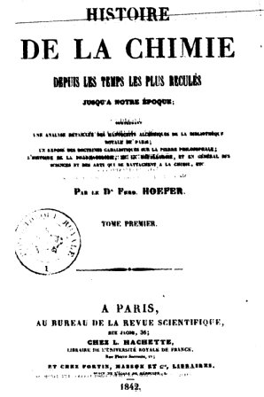
frontispice de l'Histoire de la Chimie, 1842
C'est une oeuvre monumentale de plus de 1100 pages, que nous devons à Ferdinand Hoefer, l'un des plus célèbres des savants bibliographes du XIXe siècle, le rédacteur infatigable de la célèbre Biographie générale (46 volumes) connue, citée, utilisée encore de nos jours, et à -travers le monde entier. Cette Histoire de la chimie, dont la première édition fut proposée en 1842 [1843], est une fresque tout à fait complète et minutieuse de cette importante discipline scientifique. Ses profondes connaissances linguistiques permirent à Hoefer d'accéder à des documents inconnus et ignorés encore, au XIXe siècle. Son immense érudition nous fournit une foule d'indications, de précisions, et surtout d'expoitations de première main qui font de ce livre un ouvrage de référence, utilisé, voire pillé plus de cent ans après sa dernière édition. Et nous avouons évidemment notre dette à cet égard - d'ailleurs, nous avons scrupuleusement mentionné Hoefer dans plusieurs de nos sections, à chaque fois qu'un emprunt était ralisé - En fait, depuis l'origine des temps jusqu'à l'aube de la chimie moderne, les moindres éléments de cette vaste science sont ici répertoriés, analysés, et minutieusement historiés. Mais ce qui, sans doute, a le plus contribué à l'extrême rareté des éditions de ce classique (de son vivant l'auteur se plaignait déjà du prix considérable, en salle des ventes, de l'un des exemplaires de la première édition), c'est qu'il constitue la plus volumineuse et la plus complète des histoires de l'alchimie depuis son origine extrême-orientale jusqu'au XIXe siècle. Tous les auteurs et protagonistes y sont historiés, analysés, largement cités, leurs théories et leurs mouvements analysés. Tout le corps de l'ouvrage est émaillé de précieuses et indispensables notes et références qui font de ce livre un exceptionnel outil de travail, pour ceux qui se passionnent pour l'antique et fascinante discipline d'Hermès.
« On peut diviser les savants en deux classes : les uns, observateurs habiles, cherchent à reculer les limites de la science; les autres s'attachent à la répandre et à la faire aimer... »
Cette phrase, écrite en juin 1846 par Ferdinand Hoefer au sujet du Pr. Richard, caractérise également son auteur. Le succès qu'ont rencontrés ses ouvrages auprès du public montre qu'il a réussi, si ce n'est à répandre la science, du moins à la faire aimer et connaître d'un plus grand nombre.
Jean-Chrétien-Ferdinand Hoefer est né le 21 avril 1811 à Doeschnitz (principauté de Schwarzbourg-Rudolstad). Il suit de brillantes études littéraires à Rudolstadt, mais à l'àge de dix-neuf ans :
« susceptible et avide de tout ce qui tient au merveilleux et à l'extraordinaire, animé de l'instinct voyageur, je n'étais point, écrit-il, destiné à végéter au sein d'une vie paisible, dans le cercle de la parenté et de la famille... »
il quitte sa ville natale et voyage pendant sept mois à travers l'Europe et une partie du bassin méditerranéen. Il se rend en France, après avoir visité la Hollande et la Belgique, et s'engage dans le régiment étranger de Hohenlohe, alors en garnison à Marseille. En 1831, il quitte le service pour enseigner à Nantes, puis aux collèges de Saint-Etienne et de Roanne (de 1832 à 1834). Appelé en 1834 à Paris (où il habitera jusqu'à sa mort, survenue en mai 1878 à Brunoy) par Cousin dont il est quelque temps le secrétaire, il suit les cours d'Ampère et de Thénard puis ceux de l'école de médecine. Il est reçu docteur en médecine de la faculté de Paris le 31 janvier 1840 avec une thèse remarquée sur la chlorose, tout en collaborant à de nombreux journaux et publications scientifiques. Etabli médecin à Paris en 1841, il est chargé, en 1843 et en 1846, de missions scientifiques en Allemagne par le ministère de l'Instruction publique . Naturalisé français en 1846, il consacre la majeure partie de son temps à la rédaction de ses travaux ainsi qu'à de nombreux articles sur des sujets des plus divers. En 1851, il prend la tête de la Nouvelle biographie universelle... à laquelle il fournira quelques-unes de ses meilleures notices et à qui son nom restera désormais attaché. Grâce à sa formation littéraire et scientifique, Ferdinand Hoefer a su donner à ses ouvrages une forme appréciée du public, comme en témoigne le nombre des rééditions et des traductions. L'un des premiers, il a introduit dans les travaux d'une lecture généralement si peu attrayante un élément nouveau, d'un intérêt puissant, l'histoire :
«...L'histoire des sciences comme je la comprends, déclare Hoefer, n'est pas une aride nomenclature de faits et de noms propres, ni encore moins une polémique irritante sur des questions de priorité. Il y a là un intérêt bien autrement élevé. L'histoire des sciences nous indique... le fil conducteur des grands événements qui impriment à l'industrie, aux arts et au commerce une direction nouvelle, et qui, par cela même, changent souvent la face de la société. L'histoire des sciences déroule devant nos yeux les différentes phases que l'intelligence humaine parcourt dans son développement... »
« L'histoire de la chimie restait encore à faire »,
dit-il en débutant la préface de son Histoire de la chimie... parue la première fois en 1842-1843 ; aussi, le succès est considérable, cette édition est épuisée en quelques années et les exemplaires recherchés atteignent des sommes élevées. La critique est aussi enthousiaste ; ainsi Chevreul ne consacrera pas moins de quatorze articles dans le Journal des savants à commenter les différents chapitres. Eugène Cheveul, ce faisant, glissera dans cette critique bien des commentaires dont la subtilité a dû échapper à la majorité de ses contemporains... Malgré la deuxième édition, parue en 1866-1869 avec un titre modifié et un contenu considérablement augmenté, cet ouvrage restait jusqu'à ce jour fort difficile à se procurer.
« La chimie est née d'hier : il y a cent ans à peine qu'elle a pris la forme d'une science constituée sur les débris d'une formation... semi chimérique et demi positive... : l'alchimie ... ... »
L'histoire que nous expose Hoefer est en fin de compte celle de l'alchimie, la plus substantielle qui est parue jusqu'à ce jour selon Caillet, depuis ses origines mythiques et de sa transmission jusqu'à nos jours, par l'intermédiaire des sociétés initiatiques.
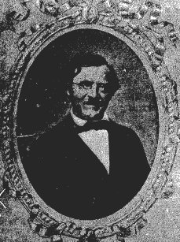
Ferdinand Hoefer (1811-1878)
Voici au sujet de l'historien quelques réflexions de Camille Flammarion :
J'étais donc entré à la rédaction du Cosmos, à laquelle le neveu de Montgolfier était associé (Séguin était d'ailleurs un ingénieur célèbre), présenté par le docteur Hœfer. C'est un grand plaisir, c'est un véritable bonheur pour moi, de rappeler ici le souvenir de cet homme de bien, qui était en même temps un esprit de premier ordre. Je me liai rapidement avec lui, et nous restâmes en relation fréquente jusqu'au jour de sa mort (mai 1878). Il habitait à Brunoy, sur la lisière de la forêt de Sénart, et souvent il signa ses articles « l'Ermite de la forêt de Sénart ». Son ouvrage l'Homme devant ses Œuvres est signé JEAN L'ERMITE [LES SAISONS : ETUDES DE LA NATURE, PARIS, HACHETTE, 1867]. C'était un indépendant, un observateur et un philosophe.Je dois à Ferdinand Hœfer d'avoir apprécié, de bonne heure, deux. axiomes non vulgaires : le premier, que « la recherche de la fortune et l'ambition des honneurs sont incompatibles, avec le véritable bonheur de l'esprit » ; le second, que « la science officielle n'est pas la garantie de la vérité ». J'entrais dans la vie lorsque pour la première fois j'échangeai les confidences de ma jeunesse avec les conseils de son expérience, par une belle après-midi d'été, sous les vastes ombrages de la forêt de Sénart. Je croyais que les millionnaires étaient heureux et, malgré mes démêlés avec Le Verrier et ses histoires variées, je pensais encore qu'en général les savants de l'Institut vivaient dans l'idéal et dans la paix suprême de la contemplation pure. Le philosophe historien, qui avait déjà alors publié les quarante-cinq volumes de la Biographie générale, et qui avait étudié de près les hommes et les choses, calma mon enthousiasme en me racontant l'histoire des savants illustres qui vivaient encore, et notamment celle de Victor Coùsn, dont il avait été le secrétaire [...] On aura une juste idée du caractère d'Hœfer en relisant les pages qu'il a écrites en préface de son livre des Saisons, et notamment le passage suivant qui en dit plus qu'une longue biographie :
Retiré depuis-près de dix ans à la campagne, écrivait-il en 1867, je passe mai vie au milieu de ces harmonies qui élèvent l'âme quand on cherche sérieusement à en pénétrer les lois. Dans cet exil volontaire, il m'est arrivé de faire de singuliers rapprochements entre le tourbillon du monde humain et les paisibles transformations de la nature. Pourquoi les hommes perdent-ils tant à être vus de près ? Pourquoi le spectacle de leurs passions est-il si attristant ? C'est parce que là tout est étroit et borné : c'est une atmosphère où l'on étouffe, parce que chacun veut être un dieu. On a hâte d'aller respirer l'air libre, pour se mettre en communication avec ce qui n'est pas de création humaine. Dans ce domaine sans limites, on ne saurait rien voir de trop près, on s'y sent attiré, comme malgré soi, par ce centre inconnu qu'on appelle la Vérité. Ayant été à même d'étudier la vie des hommes qui ont laissé des traces de leur passage, je comprends le mot d'un célèbre écrivain: que, passé un certain âge, on ne peut être qu'un misanthrope ou un coquin. A cette triste alternative, il y a cependant un remède : l'amour de la nature, allié à l'amour du travail. Je voudrais, par une sorte d'égoïsme, faire partager à tous mes lecteurs le bonheur que je ressens au foyer de ce double amour. Aucun plaisir n'est comparable à celui qu'on éprouve à interroger la nature, sans système comme sans ambition. Un insecte, un brin d'herbe, un grain de sable, peuvent devenir le point de départ d'une inépuisable série de questions et de réponses. C'est alors qu'au milieu de l'infini on se sent véritablement comme chez soi.
Observateur philosophe : il l'a été tout le long du chemin de sa vie laborieuse et féconde. Son tempérament était d'étudier toujours. Né en 1811, à Dœschnitz, en Thuringe, il vient en France à la révolution de 1830. Vingt ans et vingt francs : c'est là toute sa richesse. Il commence par donner des leçons d'allemand, puis nous le suivons à Roanne et à Saint-Étienne, où il se fait nommer professeur de troisième. A ses moments perdus, il donne des leçons de piano et compose des valses. Ensuite il traduit Kant (Critique de la raison pure) et, sur la recommandation de Burnouf, Cousin, enchanté, l'appelle auprès des lui. Hœfer devient secrétaire de l'académicien. Quel honneur ! mais quel dénuement ! Écrire sous la dictée du maître, recevoir directement et sans intermédiaire les paroles sonores qui tombaient de sa bouche, et les communiquer à la postérité, c'était à peu près tout le traitement du secrétaire. Un jour, il s'était installé dans un petit cabinet de la bibliothèque de l'Institut, afin de vérifier plus commodément les passages des pères de l'Église qu'Abélard cite dans son Sic et non, lorsque Cousin remarqua cet aphorisme du prologue : Dubitando ad veritatem pervenimus ( c'est en doutant que nous marchons vers la Vérité). Abélard n'invoquant à ce propos aucune autorité, Cousin n'hésite pas à lui faire honneur de cette proposition analogue à la théorie de Descartes sur le Doute. Aussitôt, sur cette découverte philologique, Cousin compose pour l'Académie des sciences morales et politiques un mémoire dans lequel Abélard est présenté comme le précurseur de Descartes. Sa lecture faite est parfaitement accueillie. Il vient informer son secrétaire de l'assentiment flatteur de son auditoire académique.
« Mais, lui dit très tranquillement Hœfer, le passage dont vous parlez n'est pas d'Abélard, il est de Cicéron, et même du traité le plus connu de l'orateur romain, de Officiis. »
« Malheureux ! s'écrie le philosophe transporté de colère. Ne m'avoir pas garanti de cette méprise !... Je suis un homme littéralement déshonoré ! »
L'emportement philosophique prit ce jour-là un tel diapason, que le pauvre secrétaire dut rompre sans plus tarder. C'était en 1836. L'histoire d'Hœfer avec Victor Cousin ressemble un peu à la mienne avec Le Verrier. Il se vit obligé de quitter son maître, se décida à choisir une profession plus indépendante, se consacra à l'étude de la médecine et se fit recevoir docteur. Hœfer exerça quelques années la médecine avec zèle, dans les quartiers les plus populeux de Paris. On lui doit d'avoir introduit scientifiquement, et à la suite d'expériences bien conduites, l'usage du platine et des sels de platine dans la thérapeutique [remarquons qu'actuellement les sels de platine sont utilisés en chimiothérapie dans le traitement de certaines formes de cancer broncho pulmonaires]. Il se fit naturaliser Français en 1848 « lorsque la nation se gouverna elle-même ». C'est à partir de cette époque qu'il se consacra à ses études de bénédictin d'où sont sortis ses innombrables articles de la nouvelle Biographie générale, dont il avait pris la direction, de l'Univers pittoresque et des revues et journaux auxquels il apportait une collaboration active. Sa réputation comme historien des sciences devint universelle, et j'ai lu sur ce point des lettres de l'illustre Humboldt extrêmement flatteuses. Ses ouvrages originaux et surtout son Histoire de la Chimie firent connaître son nom aux érudits de l'Europe entière. Voilà une vie qui mérite d'être donnée en exemple à tous les jeunes gens. La philosophie de Hœfer est celle de Jean Reynaud : c'est la philosophie socratique et platonicienne transportée sous le ciel de l'astronomie moderne. Socrate et Platon seraient ressuscités de nos jours, qu'ils ne penseraient pas autrement. Hœfer croit, avec raison, que l'humanité n'est encore qu'en son enfance et que c'est une « bambine », non arrivée à l'âge de raison. C'est assurément incontestable, et les armées permanentes dont se glorifient tous les peuples prétendus civilisés suffi-raient à elles seules pour affirmer le « bambinisme » de notre espèce, comme disait, il y a un demi-siècle, mon ami regretté Pezzani, et comme me le répétait récemment mon savant vice-président de la Société astronomique de France, le mathématicien Laisant. L'humanité terrestre a trois ou quatre ans, pas davantage, relativement à sa durée. On doit reconnaître que les idées émises dans ce programme philosophique sont judicieuses et excellentes. Hœfer était un puits de science, II maniait le calcul différentiel et intégral comme la syntaxe grecque, le formulaire de la médecine ou les antiques annales de l'histoire, et l'on ne peut lire dix pages de lui sans s'éclairer et
sans s'instruire. Les assertions suivantes sont particulièrement dignes d'attention .
Suivant Ampère, les atomes sont des centres d'action moléculaire, dont les dimensions doivent être considérées comme rigoureusement nulles. Adoptant la théorie d'Ampère sur la constitution de la matière, Cauchy ajoute : « S'il nous était permis d'apercevoir les molécules des différents corps soumis à nos expériences, elles présenteraitent à nos regards des espèces de constellations, et en passant de l'infiniment grand à l'infiniment petit, nous retrouverions dans les dernières particules de la matière, comme dans l'immensité des cieux, des centres d'action, placés en présence les uns des autres » II est remarquable de voir les premiers philosophes de l'antiquité s'accorder sur le même point avec les savants les plus éminents de notre époque, à savoir que les groupes d'atomes ou les molécules sont des mondes, que les atomes, comme les astres, sont séparés par des interstices qut, d'après Newton lui-même, sont plus grands que les espaces intersidéraux, que ces interstices sont remplis d'un fluide particulier, enfin que les mouvements des atomes, mouvements rotatoires, centrés, reproduisent, dans l'infiniment petit, les mouvements des corps célestes. Ce qu'il y a de certain, c'est que, quelque énorme que soit la masse des corps célestes, quelque longues que soient les périodes de leurs mouvements révolutifs, elles s'évanouissent devant l'infini, et que, sous ce rapport, les astres ne sont, comme les atomes, que de simples centres d'action. Cela est rigoureusement mathématique. La matière, le temps et l'espace, qui troublent tant l'esprit humain, peuvent donc être légitimement supprimés.
Le plus curieux peut-être encore, c'est de remarquer que cette assimilation entre les atomes et les astres, entre les molécules, composées d'atomes, et le système du monde, qui faisait l'objet de nos conversations il y a près d'un demi-siècle, et qui était exprimée par Cauchy longtemps avant nous, est reprise, en ce moment, comme nouvelle hypothèse (!) par les plus éminents mathématiciens de notre époque. Elle paraît être vraiment l'expression de la vérité. Il n'y a ni petit, ni grand dans la nature. Le docteur Hœfer habitait, comme je l'ai dit, à l'orée de la forêt de Sénart. J'y fis quelquefois avec lui et quelques amis, qui venaient passer chez lui les après-midi du dimanche, de belles promenades sous les grands arbres de la forêt. Il était botaniste et, connaissant toutes les plantes, nous dépeignait avec amour leurs propriétés. II y avait parfois, vers le coucher du soleil; des heures de lumière dorée, de silence et de recueillement tout à fait merveilleuses. On pensait plus qu'on ne parlait, on sentait la vérité du sentiment du poète :
La Nature est un temple où de vivants piliers
Laissent parfois sortir de confuses paroles.
Oui, la Nature est un livre, sublime que nous ne devons jamais nous lasser de lire. Il est ouvert à tous les yeux. II est écrit pour toutes les âmes. Nul livre , humain ne peut lui être comparé. Vivre dans la contemplation du beau, dans la poésie de la Nature et de l'art, dans l'esthétique du pur, dans la recherche du Vrai, du Beau et du Bien, quelle vie pourrait être supérieure à celle-là ! Ce fut la vie de Socrate, de Platon, de Marc-Aurèle, de Galilée, d'Emmanuel Kant, de Raphaël, de Mozart. Je n'en ai, pour ma part, jamais ambitionné d'autre. Les deux premiers éléments de bonheur dans la vie sont le cœur et l'esprit, l'amour et le travail intellectuel : l'amour en lui-même et pour lui-même ; sans but indirect, sans intérêts d'aucune sorte. Penser, aimer, c'est réellement vivre. J'ai été bien surpris de constater, dans la suite de ma carrière, combien il y a peu d'êtres qui pensent et qui aiment. En général, on s'agite pour des vues intéressées, et l'on n'est pas heureux. On passe sa vie à vouloir conquérir, comme Napoléon, allant d'Austerlitz à
Sainte-Hélène. Combien l'étude calme et tranquille des sciences n'est-elle pas supérieure à la vie ambitieuse des hommes qui cherchent avant tout des places lucratives, et n'en ont jamais assez ! Si la science est digne d'admiration, le caractère de l'homme de science est sûrement une condition de bonheur plus importante encore que tout son savoir.
Mémoires biographiques et philosophiques d'un astronome, Paris, E. Flammarion, 1912
Et voici encore quelques mots en provenance de la patrie d'adoption de Hoefer, Brunoy :
En 1857, vint habiter rue des Grès au N° 27, une personnalité universellement connue. Il s’agit de Ferdinand Hoefer, né en Thuringe (Allemagne) en 1811. Après des études de théologie et plusieurs langues mortes et modernes en Allemagne, il gagna la France pour professer le grec, le latin, l’allemand, l’anglais et l’italien, tout en suivant les cours de la Sorbonne & C’est dire sa capacité de travail ! Il fait une traduction très difficile en français de « la Critique de la Raison pure » de Kant. Son travail est tellement apprécié qu’il est désormais considéré comme un philosophe confirmé. Il suit aussi les cours de la Faculté de Médecine. Très apprécié par ses condisciples, il est considéré comme l’un des personnages les plus cultivés de son époque. Envoyé pour une mission d‘études en Allemagne pendant trois ans par le gouvernement français, il reçoit pour ses rapports et son travail la Légion d’Honneur et il est l’objet d’une grande considération. Les établissements Firmin Didot le sollicitent pour prendre la direction de l’énorme
« Biographie Universelle » en 46 volumes. Quant aux éditions Hachette, elles lui proposent de rédiger une partie de « l’ Histoire Universelle » en ce qui concerne les sciences. Durant 21 ans, il séjourne à Brunoy dans cette rue des Grès qui, en cette fin du XIXe siècle avait encore son aspect rural, avec ses cours communes, des fermes dans les environ et la forêt toute proche, au point qu’à Paris on l’appelait l’Ermite de Sénart ». (extrait du livre Les Bosserons Hameau de Brunoy, page 160). Pendant ses années de séjour aux Bosserons, il profita largement de la campagne, passionné de botanique, étudiant les plantes de la forêt. Dans son ouvrage « Les Saisons, Etude de la Nature » de 1867, il professe :
« Passé un certain âge, on ne peut qu’être qu’un misanthrope ou un coquin. Il y a pourtant un remède : l’étude de la nature alliée à l’amour du travail ».
Ce ne fut ni un misanthrope, ni un coquin. Il mourut discrètement le 4 mai 1878.
Jacques GAUCHET
¯
Ferdinand Hoefer distingue trois époques dans l'histoire de la chimie, et dans celle des connaissances humaines en général : l'Antiquité caractérisée par l'exactitude des faits observés, par la justesse et la simplicité des doctrines énoncées ; le Moyen Âge où la pensée dominée par la suprématie spirituelle s'égare dans les spéculations mystiques ; et, enfin, les temps modernes caractérisés par la tendance des esprits à démontrer les généralités déduites de faits observés. Il base son étude sur une recherche minutieuse des textes et des auteurs les plus anciens, pour lesquels il s'efforce de donner une bibliographie raisonnée. Il a recours aux citations chaque fois qu'il les juge nécessaires à l'éclaircissement ou au développement de son exposé. Ce qui fera dire à Chevreul que cette histoire :
« est écrite par un homme, auquel l'érudition et les langues sont plus familières que la chimie même... »,
ce qui, dans un certain sens apparaît parfaitement justifié, et en lui reprochant un manque de rigueur, en particulier dans la corrélation entre les généralités énoncées et les faits proprements dits :
« Si nous avons, dit encore Chevreul, combattu quelques-unes de ses opinions, désiré plus de méthode dans l'exposition des faits... l'instruction du Dr Hoëfer est incontestable, sa connaissance des langues anciennes et modernes lui a permis de remonter aux sources originales des écrits qu'il a consultés ; toutes les citations qu'il en a faites... au mérite du choix réunissent celui de la fidélité. »
Cette opinion d'Eugène Chevreul, le mieux « équipé » sans doute pour pouvoir critiquer cette Histoire de la chimie, reflète parfaitement l'opinion du lecteur face à cet ouvrage de base, qui fait toujours date, et dont les travaux postérieurs n'ont pu, et ne pourront que louer les mérites .
adapté de PATRICK BUNOUT
Le texte que l'on verra a été complété heureusement, le 13 août 2003. Nous avons eu accès, en effet, au volume de 1844 du Journal des Savants grâce au fonds de la bibliothèque de La Rochelle. Ce volume manque, hélas jusqu'à ce jour, sur le serveur Gallica de la bnf, l'un des fleurons actuels de la culture française virtuelle. Le texte se trouve ainsi complété du second article. Ce texte de Chevreul donne des références très utiles sur nombre d'alchimistes et complète ainsi celui de F. Hoefer. Ayant souhaité commenter ce texte, nous avons préféré inclure des notes dans le texte, plutôt que de faire des renvois à des notes en bas de document.
¯
Il nous faut dire quelques mots sur le critique de Ferdinand Hoefer : Michel- Eugène Chevreul. Le lecteur trouvera déjà certains éléments biographiques recueillis sur divers sites internet et dans deux sections : d'une part, l'une, spécifique sur la vie et l'oeuvre d'Eugène Chevreul ; l'autre dans la section Philosophie hermétique I, où Chevreul parle
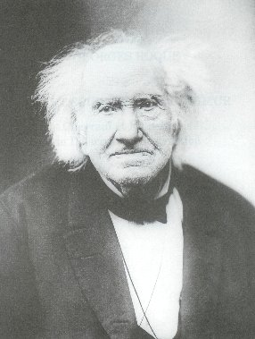
Eugène Chevreul à 100 ans, photographié par Nadar, cf. reportage photographique
d'Artéphius et d'un ouvrage qu'il pense avoir été rédigé non pas, comme on le pensait jusqu'alors par Alphonse X, mais bien par le légendaire Artéphius. Quant au texte de cette critique, il complète souvent - plutôt qu'il ne l'analyse - le texte de F. Hoefer et, en maints endroits, il permet d'accéder à des informations que Hoefer, soit avait réservées sans doute parce qu'il ne pouvait pas faire état de toutes ses notes, soit qu'il ne connaissait pas - ce qui semble d'ailleurs peu probable, car l'érudition de F. Hoefer est écrasante. L'une des raisons notables, qui nous a décidé à « scanner » le texte des 15 articles de Chevreul à partir d'extraits du Journal des Savants, est qu'il s'agit, parfois à peine à mots couverts, d'une étude tout autant que d'une histoire de l'alchimie. Chevreul distingue en effet une 1ère époque de l'alchimie, qui va de Geber [Djabir] à Becher, et qui va rester à peu près inchangée dans sa doctrine tout au long du Moyen Âge et jusqu'au début de la Renaissance. Surviennent alors Pic de la Mirandole et Marsile Ficin qui seront, avec Léonard de Vinci, les vecteurs d'un courant de pensée nouveau. La 2èmeépoque de l'alchimie, qui est d'ailleurs tout aussi chimérique pour Chevreul que la première, survient avec Stahl, qui fait connaître les notions de terre vitrifiable, terre combustible et terre mercurielle, notions qu'il emprunte à Becher et qui vont trouver leur réalisation conceptuelle dans la théorie du phlogistique, étape marquante dans l'histoire de la chimie, puisqu'elle devait orienter Lavoisier vers une nouvelle théorie de la combustion, en accord avec l'expérience, et à la découverte de l'oxygène. Un mot encore : certains des lecteurs de Chevreul furent sans doute terrassés avant que les quatorze articles aient été édités dans le Journal des Savants :
J'ai parlé plus haut du Journal des Savants, il a bien aussi son originalité ; le temps n'est rien pour ses rédacteurs, et l'illustre M. Littré — à ne citer que celui-là — n'a pas fait moins de douze articles sur un volume de M. Matzner intitulé : Altfrancosische lieder et mis trois ans à les publier. Le trop célèbre M. Chevreul, sachant qu'il avait du temps devant soi, s'est moins pressé et a mis de 1843 1851 à faire le compte rendu d'un livre de M. Hoefer; il est vrai qu'il lui a consacré quatorze articles, mais c'est bien compter sur la patience du lecteur, et quelques-uns ont eu largement le temps de mourir pendant les huit années qu'a duré ce compte rendu phénoménal [...]
in Firmin Maillard (1833-1901). Les passionnés du livre.
JOURNAL DES SAVANTS
FÉVRIER 1843.HISTOIRE DE LA CHIMIE, depuis les temps les plus reculés jusqu'à notre époque, comprenant une analyse détaillée des manuscrits alchimiques de la Bibliothèque royale de Paris, un exposé des doctrines cabalistiques sur la pierre philosophale, l'histoire de la pharmacologie, de la métallurgie, et, en qénéral, des sciences et des arts qui se rattachent â la chimie, .etc. par le Dr Ferd. Hoefer. Tome Ier, Paris, au bureau de la Revue scientifique, rue Jacob, n° 30. 1842.
[On voit que Hoefer met l'accent sur la part importante que son travail va consacrer à l'exposé des doctrines hermétiques et notamment sur la pierre philosophale. Il est bien remarquable de constater que, pour la première fois dans l'histoire des sciences, on osait, en plein XIXe siècle positiviste, traiter des doctrines hermétiques et cabalistiques. Seul, Lenglet-Dufresnoy, dans son Histoire de la Philosophie hermétique, était allé aussi loin. Nous mettrons à part le livre de L. Figuier, l'Alchimie et les alchimistes. L'auteur, bien qu'il donne des détails très documentés sur l'alchimie, avait un partis pris évident contre ces doctrines et ne nous semble pas avoir été aussi objectif que Berthelot, Hoefer ou Chevreul]
L'utilité de l'histoire d'une science n'est pas restreinte aux savants qui la cultivent particulièrement; car, sans doute, elle s'étend à tous ceux qui veulent étudier l'esprit humain d'une manière positive. En effet, la source la plus abondante où l'on peut puiser, pour cette étude, les faits les plus précis comme les plus variés, ne se trouve-t-elle pas dans la connaissance même des procédés spéciaux à l'aide desquels on a établi un nombre suffisant de principes propres à constituer les divers corps de doctrine auxquels on donne le nom de sciences ? N'est-il pas évident que des histoires bien faites de chaque branche des connaissances humaines composeraient le recueil le plus exact de ce dont l'entendement de l'homme est capable, lorsqu'il s'agit d'abord de découvrir des vérités, et ensuite de les démontrer, dans l'intention de pouvoir, par leur intermédiaire, en trouver de nouvelles ? L'importance que peut avoir l'histoire d'une science n'ayant pas été toujours convenablement appréciée, nous avons saisi avec empressement l'occasion d'examiner une histoire de la chimie par le docteur Ferd. Hoefer, dont le premier volume a paru récemment. Si les considérations auxquelles nous allons nous livrer, avant de rendre compte de cet ouvrage, ne font pas partager au lecteur notre manière de voir, peut-être provoqueront-elles des discussions, ou, du moins, feront-elles naître des réflexions propres à fixer l'opinion sur l'utilité dont peuvent être les histoires des sciences, lorsque les matériaux qui les composent ont été subordonnés à une méthode rationnelle, d'aprés laquelle les auteurs, avant de prétendre captiver par la forme et par l'agrément et la variété des détails, se sont principalement proposé de faire connaître l'esprit des sciences et la succession des idées qu'elles ont propagées, aux différentes époques de leur développement. Sous ce point de vue, la chimie se présente, à celui qui veut en tracer l'histoire, comme une science tout à fait à part, soit qu'il considère la vaste étendue du champ qu'elle embrasse et les diverses classes de connaissances dont l'ensembie en constitue le fond principal, soit qu'il cherche à y rattacher des notions qui sembleraient, à une observation peu attentive, en être absolument indépendantes, parce qu'elles émanent de sources réputées généralement étrangères à son essence. Développons ces propositions. [arrêtons-nous un instant pour nous pencher sur l'origine du nom de chimie, origine assez mystérieuse il faut bien en convenir : l'art sacré fut plus tard appelé chemia ou chemeia. Hoefer nous dit que Suidas emploie, dans son lexique, le mot chmeia et le définit comme une préparation d'argent et d'or, ce qui annonce, d'entrée de jeu, l'asèm de l'ancienne Egypte tout de même que la substance hermaphrodite des vieux alchimistes comme Zosime ou Senior Zadith ; on fait circuler non moins une légende autour du mythe de la fameuse toison d'or : celle-ci, rapportée de Colchide par l'expédition des Argonautes, n'aurait été autre chose qu'un livre en parchemin, contenant le secret de faire de l'or grâce à la chimie : les alchimistes médiévaux se sont engoufrés dans ce passage obscur et en ont tiré, comme l'aurait dit Flamel, mille brouilleries. Quoi qu'il en soit, les documents authentiques où l'on remarque le nom de chemia et d'alchimia, ne remontent, qu'au IIIe siècle apr. J.-C. Hoefer distingue deux auteurs qui désignent en termes non équivoques les prémices de l'Art sacré : Alexandre d'Aphrodise, commentateur des oeuvres d'Aristote et notamment des Météorologiques dont le livre IV est consacré aux opérations « de nature ». On y traite de fusion, de calcination, d'instruments chimiques et le creuset - thganon - y est cité explicitement. C'est l'instrument de la voie sèche : aussi bien faut-il voir, sans doute, l'étymologie du mot chemia dans le mot cew : couler ou fondre, mais aussi : verser avec allusion au signe astrologique correspondant qui désigne l'aqua permanens des Anciens. Notons que ce termee st générique : on l'emploie pour les larmes - et que de larmes ne répandent pas les mères des Innocents massacrés dans l'une des aquarelles du Livre d'Abraham Juif... ! Mais il faut encore évoquer les vapeurs, l'airet, en somme, tout ce qui est de la nature de l'EAU comme l'enseignent les premiers alchimistes, cf. Jung, Racines de la Conscience. C'est encore « laisser tomber » : il faut évoquer l'un des médaillons des Vices et des Vertus du portail central de Notre Dame, à Paris, analysé par Fulcanelli dans son Mystère des Cathédrales et dont on trouve la trace - sous l'espèce du combat des deux natures - dans la Sagesse de Salomon, MS. de la fin du XIVe siècle, où est évoqué le combat de Fides contre Fallacia, renvoyant au combat entre la foi et l'erreur : J. Van Lennep n'a pas manqué de s'en faire l'écho dans son Alchimie (Dervy, 1985), p. 53 en évoquant les illustrations du XIVe siècle de Gratheus, (illustrations consultables dans : Die alchemistische Lehrdichtung des Gratheus filius philosophi, Cod. Vind. 2372.) ]
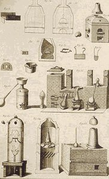
Encyclopédie de Diderot et d'alembert
On admet que toute matière perceptible à nos sens résulte de l'agrégation de parties qu'on appelle molécules, atomes, d'une si grande ténuité qu'elles sont individuellement invisibles, et que leur diamètre est bien plus petit que la distance qui les sépare les unes des autres, quoiqu'on reconnaisse cependant que cette distance échappe par sa petitesse à nos moyens les plus précis de mesurer l'étendue. [On distingue ici deux écoles ; l'une, émanée de Platon, qui considère la matière faite de corps insécables - les atomes - entourés d'une grande quantité de vide ; l'autre, émanée d'Aristote, appelée aussi péripatéticienne, qui pense que les corps sont constitués surtout d'une substance solide - Chevreul a développé ces idées dans un Mémoire de l'Académie des sciences, sur lequel nous comptons revenir ultérieurement] Tout changement d'équilibre dans l'état de ces molécules, de ces atomes, qui se manifeste par quelque phénomène sensible aux organes de nos sens, est du ressort de la chimie, soit que ce changement se borne à une simple modification de l'état d'agrégation des molécules d'une même matière, soit qu'il anime l'union de molécules de matières diverses, soit enfin qu'il consiste dans la séparation de molécules hétérogènes qui étaient en combinaison. Les phénomènes, du ressort de la chimie sont ou passagers ou permanents. Les premiers se manifestent avec l'action chimique et n'ont guère plus de durée que le temps nécessaire pour que les molécules soumises à cette action parviennent au nouvel état d'équilibre qui s'établit ; les seconds, au contraire, apparaissent après cette action, et, comme ils consistent dans les propriétés mêmes que les corps ont acquises par suite du nouvel état d'équilibre où se trouvent actuellement leurs molécules, ils ont la persistance de cet état même. Les phénornénes passagers sont un changement de température, une émission de lumière, une manifestation d'électricité, une détonation, une solidification , une liquéfaction, une vaporisation, etc. Pour être moins variés que les phénomènes permanents, ils n'en méritent pas moins de fixer l'attention, car, en se bornant à les envisager sous le point de vue de l'application, on voit qu'en eux réside la source du feu, sans lequel il n'y a pas de progrès possible dans la société humaine ; celle de la lumière, qui nous éclaire lorsque le soleil a cessé de briller sur l'horizon ou que nous nous trouvons dans des lieux impénétrables à ses rayons. Enfin, c'est par des phénomènes passagers que la poudre à canon est puissante et qu'elle a tant agi sur la civilisation en changeant l'art de la guerre. [A notre époque, l'expression « art de la guerre » fait frémir. Cette expression est d'autant plus étrange, employée par Chevreul, que celui-ci avait été marqué par les épisodes sanglants de l'époque de la Terreur. Peut-être ne faut-il ici considérer qu'une figure de style. Quoique ne se mêlant pas de politique, Chevreul semblait être assez proche du milieu de la Restauration et il est probable que ses attaches familiales et l'éducation qu'il avait reçue l'ont doté d'un caractère passablement réactionnaire, même s'il a montré qu'il était ouvert aux idées modernes.]
Les phénomènes permanents, résultats des actions chimiques, sont si nombreux et si variés, que, pour en donner une idée exacte par des exemples, on a l'embarras du choix des citations ; car il n'est aucune propriété imaginable de la matière qui ne s'y rapporte. Tantôt deux corps insipides, comme le sont l'oxygène et le soufre, produisent, en se combinant en diverses proportions, jusqu'à cinq acides absolument distincts, parmi lesquels nous citerons le sulfurique [huile de vitriol] et le sulfureux [esprit de vitriol] ; le premier est solide, caustique et volatil; le second se présente sous la forme d'un gaz doué d'une odeur suffocante et d'une saveur aigre sans causticité. Tantôt deux caustiques violents, comme le sont l'acide sulfurique et la potasse, perdent, par leur union mutuelle, la causticité et les propriétés qui caractérisent l'acidité et l'alcalinité [c'est nommer le tartre vitriolé ou sulfate de potasse. Ce sel, très important dans la voie sèche, a reçu des noms différents, parce que les anciens chimistes ont cru, à chaque fois, avoir affaire à un sel particulier : sel de duobus, arcanum duplicatum, sel polchreste de Glaser, etc - voir la section]. Une autre fois nous voyons le mercure, chauffé convenablement avec l'air, perdre sa mobilité et son éclat métallique par son union avec le gaz oxygène; il se transforme alors en une poudre rouge cristalline bien différente des deux éléments, qui la constituent [il s'agit du réalgar ou oxyde rouge de mercure. Certains alchimistes en ont parlé comme du Dragon rouge]. Pour dernier exemple, citons les principes immédiats des plantes et des animaux, en qui réside la prodigieuse variété d'odeurs et de couleurs que l'homme le moins attentif remarque dans la matière vivante, la prodigieuse variété des propriétés, en vertu desquelles les uns ont la saveur douce du sucre, l'insipidité de l'amidon; la saveur aigre de l'acide acétique; les autres, l'amertume de l'aloés, la propriété fébrifuge de la quinine, l'action délétère de la strychnine ou de l'acide prussique (cyanhydrique), etc. etc. Si la variété de ces propriétés étonne l'imagination la plus active, que doit-on penser lorsque l'analyse chimique nous révèle que la plupart de ces principes sont formés de trois, ou de quatre éléments au plus : l'oxygéne, l'azote, le carbone et l'hydrogène ! Au domaine de la chimie il faut réunir cette foule d'arts dont le but est de modifier, d'une manière utile à la société, les propriétés les plus intimes des corps en agissant sur leurs molécules, parce que la science seule est capable d'en diriger la pratique par des règles certaines. Ainsi, les moyens de préparer, non seulement les corps simples, parmi lesquels se trouvent les métaux, objets de la métallurgie, mais encore ies acides, les alcalis et les sels ; les procédés du potier de terre, du verrier, du fabricant d'émaux [des corps de métier dont la proximité à l'alchimie est extrême. La distance qui sépare un pot de terre et un rubis est moins importante qu'on le pourrait croire ; a fortiori s'il existe des cristallisations dans des glaçures, qui pourraient laisser croire à un défaut de préparation...]; l'extraction du sucre, des résines, des huiles fixes et des huiles volatiles, de l'indigo, etc.; les arts de faire le pain, les vins, les vinaigres, les fromages; l'extraction de l'alcool des liqueurs spiritueuses par la distillation [le point de départ de la voie humide : les sels d'or sont solubles dans l'eau-de-vie ; voir la section]; la préparation des vernis, des encres, des peintures ; les moyens de conserver les aliments ; la préparation des médicaments ; l'art du tanneur et du hongroyeur, et enfin les procédés si nombreux et si variés de l'art de teindre [voir section teinture], reçoivent de la chimie la forme scientifique, hors de laquelle il n'y a que la pratique aveugle. Au premier aspect on pourrait croire certains arts étrangers à cette science, parce que les produits qu'ils confectionnent sont de simples mélanges et non des combinaisons chimiques ; cependant ils peuvent s'y rattacher, si ces produits tirent leur utilité d'actions moléculaires auxquelles ils donnent lieu : tels sont, par exemple ,les arts de fabriquer la poudre à canon [salpêtre + soufre + charbon dans des proportions définies. Les mêmes matières sont utilisées en alchimie, dans la préparation du tartre vitriolé. Cela a causé bien des explosions qui ont fait grillé nombre de souffleurs] et les matières propres aux feux d'artifices; car ces préparations ,lorsqu'elles brûlent rapidement dans une arme ou successivement dans une fusée, ne remplissent leur destination qu'au moyen de phénomènes passagers essentiellement du ressort de la chimie. Enfin, comme la matière enlevée au monde extérieur par les corps vivants qui s'en nourrissent éprouve, dans leurs organes, des changements moléculaires plus ou moins grands, la chimie doit être nécessairement consultée lorsqu'il s'agit d'étudier les phénomènes physiologiques sous tous les aspects qui frappent l'observateur.
<><>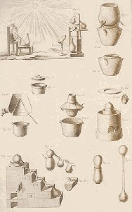
<>Encyclopédie de Diderot et d'alembert
<>
L'exposé précédent suffit, sans doute, pour justifier la qualification de vaste, que nous avons donnée au domaine de la chimie; si maintenant nous considérons les connaissances qui en constituent le fond principal relativement à leur diversité, nous verrons combien elles sont distinctes les unes des autres, et comment il en est qui se lient à des sciences très-différentes de la chimie par la manière spéciale dont chacune d'elles peut envisager le monde extérieur. Ces considérations auront le double avantage d'établir les rapports de la chimie avec ces branches des connaissances humaines et les différences qui l'en distinguent en en faisant une science absolument spéciale. Il suffit, sans doute, pour se convaincre de la diversité des connaissances fondamentales de la chimie, de dire qu'elle s'occupe :- 1° Du développement de la chaleur ; de la lumière, et de l'électricité comme phénomènes passagers de l'action chimique ;
- 2° Des circonstances où les actions chimiques s'accomplissent, soit qu'il en résulte une combinaison ou une décomposition , soit qu'il y ait à la fois combinaison et décomposition ;
- 3° Des proportions suivant lesquelles les combinaisons s'effectuent ; en les rapportant au poids ou au volume, elle arrive ainsi à distinguer des combinaisons en proportions définies et des combinaisons en proportions indéfinies ; les premières sont assujetties à des lois fort simples ;
- 4° Des formes cristallines sous lesquelles la plupart des corps apparaissent à l'état de pureté ;
- 5° De toutes les propriétés qu'il est possible de reconnaître à chaque espèce de matière qui devient par là une sorte d'individu correspondant à l'individu organisé qui représente l'espèce végétale ou animale à laquelle il appartient ; [cette représentation est soumise, d'après la théorie de Van Helmont à l'archée de la nature]
- 6° Enfin des causes des actions chimiques. C'est à cette étude que se rapporte ce qu'on peut appeler la mécanique chimique, si différente de la mécanique proprement dite.En effet, lorsque cette mécanique résout les questions de son ressort, c'est que, connaissant toujours d'une manière précise quelques-uns des termes de ses problèmes, elle parvient, à leur aide, à déterminer ceux qui sont inconnus. En définitive, la mécanique connaît ou peut connaître les masses agissantes, les trajectoires qu'elles décrivent, les vitesses qui les animent, et l'intensité des forces, causes des mouvements. Ajoutons qu'elle peut arriver à son but, quoique l'essence même des forces lui soit cachée ; car il lui suffit de connaître l'intensité de chacune d'elles par la vitesse qu'elle imprime à l'unité de masse dans l'unité de temps, soit que la force n'agisse qu'un instant, soit qu'elle agisse d'une manière permanente, à l'instar de la pesanteur. Le chimiste est dans une position bien différente lorsqu'il s'agit de définir les causes des actions chimiques en les assimilant à des forces ; car, ainsi que nous l'avons dit déjà, les actions chimiques se passent entre des parties matérielles si ténues, qu'elles échappent à nos sens. Dès lors il nous est impossible d'en apprécier la masse ou le volume, d'en suivre lés mouvements; dès lors il n'y a plus de trajectoires et de vitesses appréciables. La mécanique chimique est donc tout à fait distincte de la mécanique proprement dite. Si une chose sembie incompréhensibie,ce sont, sans doute, les changements qui surviennent dans les propriétés des corps par le fait des actions chimiques. Par exemple, comparez le soufre et le carbone au composé qu'ils forment, et voyez si vous pouvez concevoir comment le soufre, fusible à 112°, volatil à 420°, doué d'une faible odeur, et le carbone, fixe à la température la plus élevée que nous connaissions, absolument inodore, donnent naissance, par leur union mutuelle, au sulfure de carbone, liquide bouillant à 45°, et doué de l'odeur la plus fétide ! Qui conçoit en vertu de quelle force 2 volumes d'hydrogène, le corps le plus expansible qu'on connaisse, en s'unissant à 1 volume de gaz oxygène, produisent de l'eau, liquide dont le volume, à la température de zéro, est à celui des gaz qui le constituent comme 1 est à 2550 environ ? Qui conçoit en vertu de quelle force 2 volumes d'hydrogène, en s'unissant à 1 volume ou à ½ volume de carbone, donnent, dans les deux cas,1 volume d'hydrogène bicarboné et 1 volume d'hydrogène protocarboné ? De cet état de choses il résulte qu'en chimie l'étude de la force ne porte pas sur les phénomènes dynamiques qu'on lui attribue, mais bien sur des changements survenus dans la manière d'être, dans les propriétés des corps après l'accomplissement de l'action chimique, ou, en d'autres termes, lorsque ceux-ci sont à l'état statique. Mais une force attractive unique, comme la pesanteur, ne peut être invoquée pour expliquer les actions moléculaires ; il faut admettre une attraction spéciale, qu'on nomme affinité ou cohésion, et, en outre, que cette attraction se compose avec d'autres forces, telles que la chaleur, certaines radiations du soleil, l'électricité. [cette notion d'attraction ou d'affinité est l'une des raisons qui ont motivé les études chimiques et alchimiques de Newton] Il est donc de toute évidence que les considérations relatives à la nature des forces concourant à l'action chimique ne portent que sur l'observation de phénomènes ou de propriétés que les corps présentent après que, leurs molécules sont parvenues à l'équilibre plus ou moins stable qu'on attribue à l'action de ces forces. Il est aisé de voir maintenant les rapports de la chimie avec diverses sciences qui, comme elle, sont du domaine de la philosophie naturelle. En effet, la chimie a les plus grands rapports avec la physique, non seulement par l'étude qu'elle fait de l'électricité, de la chaleur, et de la lumière apparaissant sous la forme de feu dans les actions moléculaires, mais encore par la nécessité où elle est de connaître de la manière la plus précise les propriétés physiques, telles que la densité, les températures où chaque corps change d'état, soit pour se congeler, soit pour se liquéfier ou se volatiliser ; les propriétés optiques, parmi lesquelles nous distinguons la faculté d'agir sur le plan de la lumière polarisée ; enfin les propriétés électriques et magnétiques que les corps peuvent présenter d'une manière permanente dans des circonstances définies. La chimie et la physique se rencontrent donc dans l'étude des phénomènes passagers aussi bien que dans celle des phénomènes permanents.
Les lois de la cristallisation, si importantes pour la chimie, lorsqu'il s'agit de l'arrangement des molécules et des inductions qu'on tire de la forme, comme caractère des espèces, resserrent encore les liens de la physique avec la chimie, en même temps qu'elles établissent un rapport incontestable entre celle-ci et la géométrie. L'étude des proportions suivant lesquelles s'opèrent les combinaisons définies a besoin, pour être généralisée, de recourir à la science des nombres, car c'est à elle qu'on est redevable de ces expressions numériques qui constituent la doctrine des quantités équivalentes. Enfin, l'étude des actions moléculaires qui s'accomplissent dans les plantes lorsqu'elles s'assimilent feau, le carbone de l'acide carbonique, la matière organique plus ou moins profondément altérée des engrais, établit entre la chimie, la physiologie végétale et l'agriculture, le même rapport que l'étude des actions moléculaires qui s'accomplissent dans les animaux pendant la digestion, la respiration, les sécrétions, etc. établit entre la chimie, la physiologie animale et la médecine. Mais, après avoir fixé les rapports de la chimie avec la physique, la géométrie, la science des nombres, la physiologie, l'agriculture et la médecine, tout en lui accordant la qualification de science, lui refusera-t-on un caractère propre, essentiel, absolument spécial ? Non certainement ; car, si elle recourt à la physique et à la géométrie lorsqu'elle étudie les propriétés physiques des corps, à la physiologie et à la thérapeutique lorsqu'elle veut connaître celles de leurs propriétés que nous appelons organoleptiques, elle seule apprend à connaître leurs propriétés chimiques, elle seule ramène chaque matière simple ou complexe à une définition précise, reposant sur l'ensembie des propriétés physiques, chimiques et organoleptiques, inhérentes à cette matière, afin d'en faire ce que nous nommons une espèce chimique ; et c'est même de là qu'elle tire le caractère essentiel et absolument spécial qui la distingue de la physique. Sous ce dernier rapport, chaque espèce de corps, simple ou composé, est donc envisagée par le chimiste comme une unité ou comme un individu doué d'un ensemble de propriétés inséparables de sa nature, ainsi que les corps vivants, d'après des caractères tirés de l'organisation, sont définis par le naturaliste en espèces végétales ou animales distinctes les unes des autres.
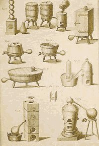
Encyclopédie de Diderot et d'alembert
Il nous reste une dernière proposition à développer, c'est de montrer la nécessité où se trouve l'auteur d'une histoire de la chimie vraiment rationnelle de rattacher à cette science des idées qu'on pourrait en croire indépendantes, parce qu'elles ont été exposées d'abord par des écrivains qui n'étaient pas chimistes, ou qu'elles ont commencé à fixer l'attention des philosophes à une époque où la chimie n'existait point encore comme science. Parmi ces idées nous citerons celles qui concernent la nature des corps, la formation de ceux qu'on considérait alors comme complexes, la force prise dans les molécules, la destruction apparente de la matière, ou sa transformation, ou, ce qui revient encore au même, la circulation des éléments dans des corps affectant les formes les plus variées. Les anciens philosophes, en se livrant à l'examen de ces idées, ne craignirent pas d'aborder des questions qui exigeaient la lumière des sciences physico-chimiques pour être traitées avec quelque chance de succès ; aussi durent-ils échouer, malgré la force de leur intelligence et leur esprit observateur, lorsqu'ils voulurent distinguer les éléments de la matière, assigner une composition essentielle aux corps complexes, parler de la formation de la terre, expliquer la combustion, en un mot, traiter de phénomènes passagers ou permanents relatifs aux actions chimiques. Mais, si l'écueil contre lequel leurs efforts se brisèrent ne pouvait être franchi qu'avec des secours qui leur manquaient absolument, ils montrèrent jusqu'à l'évidence qu'ils sentaient le besoin de comprendre dans la philosophie l'étude du monde extérieur, et c'est sous l'influence de ce sentiment que plusieurs grandes harmonies de la nature n'échappèrent point à leur observation, quoiqu'ils les représentassent par les images de la poésie, au lieu de les décrire dans le langage précis de la science. [c'est évidemment à l'alchimie ou Art sacré que se réfère, implicitement, le chimiste. Notez bien qu'il parle de poésie là où les textes sont obscurs ; on peut voir une préfiguration du surréalisme, où les idées alchimiques ont eu une certaine importance] Enfin, pour achever le développement de notre dernière proposition, parlons des avantages que la connaissance de la méthode chimique peut avoir pour celui qui se livre à une étude approfondie de ce qu'on appelle en philosophie la méthode analytique et la méthode synthétique. Les opérations de la chimie étant, sans exception, analytiques, synthétiques, ou à la fois analytiques et synthétiques, et les résultats qu'elles donnent tirant de leur netteté un caractère incontestable de leur origine, elles présentent des exemples d'une précision rigoureuse, propre à faire comprendre la marche de l'esprit, qui, pour découvrir et démontrer d'autres vérités que les vérités chimiques, se livre aux opérations d'une analyse ou d'une synthèse purement intellectuelle. En effet les résultats des opérations chimiques, considérés sous le point de vue de leur origine analytique ou synthétique, doivent leur précision à l'accord qui règne entre tous les chimistes pour distinguer les corps réputés simples d'avec les corps composés : Dès lors on sait toujours parfaitement, sans ambiguïté, si le résultat d'une opération est analytique ou synthétique, ou s'il est à la fois analytique et synthétique. On voit qu'il n'y a pas de science chimique sans synthèse ou sans analyse, et, en outre, que les produits de la synthèse n'ont de valeur scientifique qu'autant que l'analyse a défini d'une manière rigoureuse les éléments unis par la synthèse; toute synthèse suppose donc des analyses préalables pour que les conclusions déduites de la première aient la clarté et la précision qui leur impriment le caractère scientifique. C'est en prenant, dans chaque science douée d'un caractère absolument spécial et livrée à l'étude du monde extérieur, la méthode la plus générale au moyen de laquelle l'esprit recherche les vérités du ressort de cette science, qu'on peut arriver, suivant nous, à recueillir, pour l'histoire de l'entendement, les matériaux les plus précis comme les plus exacts ; parce qu'en définitive ils ont été découverts, élaborés, soumis à des discussions plus ou moins nombreuses, plus ou moins approfondies, et, enfin, coordonnés par les intelligences variées qui ont animé des hommes éminents livrés à la recherche des vérités d'une même classe.
Conclusion relative à la manière de composer une histoire de la chimie.
Après avoir démontré par les considérations précédentes combien une histoire de la chimie est difficile à écrire, à cause de la vaste étendue du champ qu'elle embrasse et de la diversité même des matériaux qui doivent la composer, lors même qu'on ne voudrait pas descendre aux détails, il nous reste à parler d'une difficulté plus grande, suivant nous, que toutes celles qu'on peut s'imaginer en ne voyant que le nombre et la diversité des matériaux; la faire connaître sera justifier complètement la proposition que nous avons émise en avançant, au commencement de cet article, que la chimie se présente comme une science tout à fait à part à celui qui veut en tracer l'histoire. Parlons d'abord des sources où l'on peut trouver les matériaux de l'histoire de la chimie dais les temps les plus anciens. Si, en cherchant avec attention dans le passé tout ce qui se rapporte à la connaissance des actions moléculaires, y compris les arts chimiques et les idées concernant la nature des corps, on arrive à conclure que l'origine de la chimie, considérée comme science, ne remonte guère au delà du XVIIIe siècle, on est cependant obligé de reconnaître qu'il y a un grand, nombre de notions antérieures à cette époque, qu'il faut rassembler et examiner soigneusement sous le rapport de l'influence qu'elles ont pu avoir sur les premiers développements de la science. Les sources où l'on peut puiser ces notions sont les arts chimiques, les systèmes philosophiques, enfin un ensemble de choses occultes parmi lesquelles nous comprenons l'alchimie. [observez bien de quelle manière Chevreul aborde son domaine réservé. Il parlera plus loin de ces choses occultes en maître de l'art et développera, dans un des Mémoires de l'Académie, une section allant tout à fait dans le sens de notre hypothèse de travail : la « transmutation » des pierres communes en pierres précieuses. Évidemment, le sens à attribuer au mot transmutation est ici fautif, mais Chevreul l'emploie exprès pour faire valoir ce qui pouvait, en fait, être littéralement occulté par la prétention des alchimistes à pouvoir réaliser des transmutations de métaux imparfaits en or ou en argent ]
1ère source. Si les arts donnent des faits positifs à celui qui peut en étudier les produits, en s'éclairant des procédés que les écrivains de l'antiquité nous ont transmis, il faut avouer cependant que l'histoire de l'industrie des anciens peuples présente bien des lacunes, et qu'il n'est pas toujours facile de choisir l'ordre le plus utile à suivre pour en coordonner les notions relativement à l'histoire de la chimie.
2ème source. Les notions concernant la nature des corps professées par les anciens philosophes sont vagues ou manquent d'exactitude, puisqu'elles ne furent jamais expérimentales. Il importe cependant de chercher les analogies qu'elles peuvent avoir avec nos théories actuelles, et surtout de reconnaître les rapports qui les unissent avec les premiers essais de théories chimiques. Cette recherche est fort délicate; car elle ne consiste pas à faire des extraits des systèmes généraux, mais bien à découvrir ce qu'il y à dans ces systèmes d'essentiellement applicable à l'histoire de la chimie.
3ème source. La source qui a fourni le plus de faits, le plus de notions utiles, le plus d'idées à cette science, est, sans aucun doute, celle qui se composait de traditions et de procédés pratiques transmis â un petit nombre de personnes choisies. Nous comprenons dans cette source la cabale, la magie, et surtout l'alchimie : évidemment une doctrine chimique devait sortir tôt ou tard de la pratique de procédés concernant les actions moléculaires de la matière ; mais que de difficultés pour apprécier exactement les résultats de cette pratique, en l'étudiant dans le développement de ses procédés successifs, puisque ceux qui s'y livraient devaient tenir leurs travaux secrets, et, s'ils écrivaient, c'était exclusivement pour des initiés ! Enfin les idées, les doctrines mystiques, qui, dès l'origine, furent associées de la manière la plus intime aux procédés dont nous parlons n'ont pas peu contribué à épaissir les ténèbres qui règnent sur un sujet déjà si obscur par lui-même. [c'est l'Art sacré qui est désigné ici. Chevreul développera plus loin un point essentiel : la part réelle des travaux de laboratoire dans le processus de base ayant servi à faire se développer cet « art sacré ». Nous avons développé ce point dans la section chimie et alchimie, ainsi que dans la section sur le Mercure]
En définitive, nous trouvons dans l'antiquité, avant l'alchimie, des faits pratiques et des vues hypothétiques sur la nature des corps ; mais, s'ils ont exercé de l'influence sur le développement de la chimie, ce n'est point par l'institution de recherches expérimentales. Il en est autrement de l'alchimie : les expériences de ceux qui la pratiquaient devaient aboutir à la science des actions moléculaires. Enfin, si les notions puisées dans les arts chimiques et dans les systèmes des philosophes appartenaient au domaine public, la partie pratique, tout aussi bien que la partie théorique ou mystique de l'alchimie, n'étaient connues que d'un petit nombre d'initiés.
Après avoir parlé des sources où l'on peut puiser les matériaux les plus anciens de l'histoire de la chimie, il nous reste à exposer la difficulté précédemment signalée, qui ne tient pas à la disette des faits, ni aux lacunes, ni aux obscurités des écrits, mais à la nature même des matériaux que l'historien doit mettre en oeuvre. Cette difficulté porte sur ce que les matériaux tirés des sources anciennes ont besoin, pour se fondre dans l'histoire à laquelle ils se rapportent, d'être l'objet d'un examen analytique ; car ce n'est point intégralement, en conservant leur forme et en se juxtaposant les uns aux autres, comme les pierres d'un édifice qu'on élève, ce n'est point, comme les ruisseaux qui alimentent un fleuve, en y versant leurs eaux, qu'ils deviendront les véritables éléments d'une histoire rationnelle de la chimie ; ils devront subir des modifications, de manière que des parties seront éliminées, tandis que les autres, après avoir été réduites en éléments précis et exactement définis, seront coordonnées entre elles par une synthèse habile, pour devenir les principes constituants de cette histoire. En définitive, les matériaux puisés immédiatement aux sources les plus anciennes éprouveront les modifications d'un aliment complexe qui ne s'assimile que partiellement au corps vivant qu'il doit nourrir.
[On constate que le style de Chevreul est absolument fascinant ; c'est par généralités qu'il semble parler, de manière indirecte, comme s'il en restait aux principes des choses, à leurs « principes immédiats » dirions-nous, dans un système hybride ni analytique ni synthétique. Il est vrai que Chevreul ne pouvait tolérer que l'analyse et la synthèse chimiques. L'analyse et la synthèse mentales n'étaient pour lui que de « faux amis », nuisibles à l'esprit scientifique et conduisant à des faillites intellectuelles.]
Dans un premier article sur l'Histoire de la chimie du Dr Hoefer, après avoir parlé de l'étendue de cette science, de la diversité de connaissances qui en sont l'objet essentiel, et des notions qui s'y rattachent quoique pouvant en paraître indépendantes, nous avons dit comment nous concevons la coordination des matériaux à mettre en oeuvre pour écrire une histoire de la chimie, à laquelle l'épithète de rationnelle s'appliquerait sans contestation, parce que, en retraçant fidèlement le développement successif de chaque notion fondamentale de la science, elle présenterait dans l'ordre des temps la succession des idées relatives à un même objet. L'article que nous rappelons a été, pour nous, une occasion de soumettre, à la critique des personnes qui attachent quelque importance à l'histoire des sciences, des règles qui, à notre avis, doivent guider l'auteur d'une histoire de la chimie. En revenant aujourd'hui à l'ouvrage du Dr Hoefer, nous ne l'examinerons pas pour savoir qu'il se rapproche ou s'il s'éloigne de notre manière de voir ; nous nous bornerons à faire connaître la distribution des matières qu'il renferme, et l'esprit d'après lequel les faits sont présentés au lecteur. L'histoire de l'intelligence humaine, envisagée dans son développement général ou dans un de ses développements particuliers, ayant donné lieu à des distinctions assez différentes, relativement aux caractères de diverses phases ou époques en lesquelles plusieurs auteurs, dans ces derniers temps, ont cru devoir la partager, il ne sera point déplacé, sans doute, de parler ici de quelques-unes de ces distinctions, puisque le Dr Hoefer a commencé son livre par en établir, sous le titre de Un mot sur l'histoire de la science en général. M. Auguste Comte posa les premières distinctions de ce genre, qui fixèrent l'attention, nous ne disons pas des savants en général, mais de ceux qui, réfléchissant à la manière dont les connaissances se développent et se répandent par l'enseignement oral et écrit, recherchent comment des idées justes ou inexactes se propagent dans un public lettré ou qui a la prétention de l'être pour ce dont il s'occupe. Dans un cours que M. A. Comte commença à professer, en 1826, à l'Athénée de Paris, sous le titre de Philosophie positive, auquel assistèrent plusieurs savants célèbres, il formula comme loi, dans la marche progressive de l'esprit humain, la distinction de trois états théoriques différents, par lesquels passe successivement chacune de nos conceptions principales, chaque branche de nos connaissances : l'état théologique ou fictif, l'état métaphysique ou abstrait, et l'état scientifique ou positif. Définissons ces expressions brièvement, en employant, autant que possible, les termes mêmes de l'auteur.
L'esprit humain, sous l'empire de l'état théologique, rapporte les phénomènes dont il cherche les causes, d'abord, à l'action de nombreuses divinités indépendantes ; ensuite, à l'action providentielle d'un dieu unique. Sous l'empire de l'état métaphysique, les agents divins sont remplacés, d'abord, par des forces abstraites, véritables entités ou abstractions personnifiées ; ensuite, par une seule entité générale, la nature, de laquelle découlent tous les phénomènes. Enfin l'esprit humain, sous l'influence de l'état scientifique, renonçant à connaître les causes intimes des phénomènes, cherche d'abord à en découvrir les lois par le raisonnement et l'observation ; il tend ensuite à rattacher tous les phénomènes, quelle qu'en soit la diversité, à un seul fait, à celui de la gravitation, par exemple. Voilà les distinctions posées comme lois par M. A. Comte. Nous ne rechercherons pas si elles sont fondées, si elles s'appliquent également bien à chacun des trois groupes de sciences qui traitent des phénomènes du monde inorganique, des phénomènes des êtres organisés, et des connaissances relatives aux hommes vivant en société ; nous ne discuterons pas sur la valeur du mot métaphysique, servant à caractériser le second état théorique de l'esprit humain, pour savoir si, en l'employant comme synonyme du mot abstrait, M. Comte donne une idée claire de ce qu'il veut faire comprendre à ses lecteurs ; enfin nous n'examinerons pas si l'état positif, tel que le définit M. Comte, est essentiellement différent du second état dans ses applications, et s'il est possible de concevoir une méthode philosophique quelconque sans l'emploi de l'abstraction ; qu'il nous suffise d'avoir exposé assez clairement ces distinctions, telles que M. Comte les définit, pour qu'on puisse les comparer avec des distinctions du même ordre, faites postérieurement par M. Isidore Geoffroy-Saint-Hilaire et par le Dr Hoefer.
M. Isidore Geoffroy-Saint-Hilaire, dans des considérations générales sur la zoologie, distingue trois périodes dans l'histoire de cette science et dans celle de toutes les sciences d'observation ; voici comment il les nomme et les caractérise :
- La première, période de confusion des sciences, comprenant l'antiquité jusqu'au XVIIe siècle, n'a pas de méthode déterminée ; elle a pour résultat des hypothèses ;
- La seconde, période de division, commence dans le second quart du XVIIe siècle environ, et s'étend jusqu'en 1807 ;
- La troisième, période d'association, commençant avec les travaux de M. Geoffroy père sur l'unité de composition des animaux, a pour méthode la synthèse, et pour résultat des théories.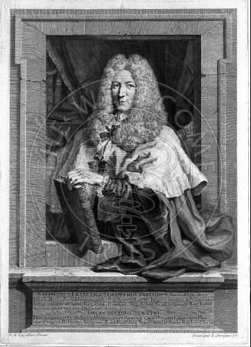
Geoffroy père
Si ces distinctions diffèrent de celles de M. Comte en ce que l'application en est bornée aux sciences d'observation proprement dites, cependant, en supposant vraies les unes et les autres, elles doivent coïncider, puisque les distinctions de M. Comte, comme les plus générales que l'on puisse concevoir, doivent comprendre les distinctions particulières de M. I. Geoffroy ; mais, si l'on prétendait qu'il n'y a pas de comparaison fondée entre les distinctions que nous rapprochons, par la raison qu'un des auteurs parle de périodes aussi bien limitées qu'on peut le faire en histoire, tandis que l'autre parle d'états de développement, nous répondrions que les choses se rapprochent réellement, puisqu'il s'agit dans les deux cas, de l'examen des connaissances humaines envisagées sous le point de vue de leur développement successif. Si l'on objectait encore que les distinctions de M.I. Geoffroy portent principalement sur les méthodes, considérées comme moyen de découvrir la vérité, tandis qu'il est en est autrement des états théoriques de développement de M. Comte, nous répondrions que ce savant rattache à chacun à chacun de ces états une méthode spéciale de philosopher, de sorte que, suivant lui, l'esprit humain, recherchant la vérité, emploie trois méthodes pour la découvrir : la méthode théologique, la méthode métaphysique et la méthode positive ; mais l'usage de l'une d'elles exclut nécessairement l'usage des deux autres, et, dans l'opinion de M. Comte, la dernière seule ne mène pas à l'erreur. Il y a donc analogie entre les distinctions des deux auteurs, et conséquemment comparaison possible à établir entre elles. [cette démarche ne vaut évidemment plus de nos jours : on ne saurait réduire les « connaissances rationnelles » à la seule méthode dite « positive ». La méthode métaphysique permet d'avoir accès aux connaissances transcendantales dont on rappelle que, par exemple, la musique ressortit.]
S'il y a cette ressemblance entre l'état théologique et la période de confusion, que, dans l'esprit des auteurs, ces distinctions concernent l'enfance des connaissances, l'époque où elles sont le moins avancées, cependant, en allant au fond des choses, on arrive sans peine à en faire ressortir la différence. En effet, la période de confusion exclut les méthodes déterminées, ou, en d'autres termes, la méthode, tandis que l'état théologique en a une spéciale, d'après laquelle des faits pourront être exposés dans un ordre parfait, si l'auteur qui la prend pour guide, convaincu que le monde est le produit de l'être infini, doué de la science et de la sagesse suprêmes, possède le talent de parler du Créateur et de ses oeuvres, comme l'ont fait Bossuet, dans la Connaissance de Dieu et de soi-même, et Fénelon, dans le traité de l'existence et des attributs de Dieu. Il n'y a plus de comparaison possible entre l'état ou la méthode métaphysique et la période de division, représentée par l'analyse ; car, par celle-ci, vous séparez des faits, des choses, d'un ensemble, pour connaître chacun d'eux, chacune d'elles en particulier, et, dans la méthode métaphysique, telle que M. Comte la définit, vous rattachez des effets, des phénomènes, à des causes, à des forces, à des entités, à des abstractions personnifiées, opération de l'esprit qui est du ressort de la synthèse et non de l'analyse. Si, au premier coup d'oeil, on aperçoit quelque ressemblance entre l'état positif et la période d'association, parce que M. Comte et M. I. Geoffroy considèrent l'esprit humain arrivé au terme où les découvertes ont le plus de précision et de généralité, on verra cette ressemblance s'évanouir en examinant les choses avec attention. Effectivement, la méthode positive ne peut être comprise sans l'usage de l'analyse et de la synthèse, et, si l'expression de période d'association a un sens défini, comme succédant à la période de division, cela veut dire que, avant d'établir des rapports à l'aide de la synthèse, on a déterminé par une analyse préalable, les éléments entre lesquels la synthèse établit des rapports [voyez notre premier article, cahier de février 1843, pages 72 et 73] ; conséquemment, l'état positif ou la méthode positive, qui comprend l'analyse et la synthèse comme moyens de connaître, ne peut correspondre rationnellement à la période d'association de M. I. Geoffroy, qui ne comprend que la synthèse. Passons maintenant aux distinctions du Dr Hoefer. Il compte trois époques dans l'histoire de la chimie, de la physique, de l'astronomie, ou, plus généralement, dans l'histoire de presque toutes les connaissances humaines.
- La première époque comprend toute l'antiquité, et s'étend jusqu'au moment où de la lutte entre le christianisme naissant et le paganisme à l'agonie. Elle incline vers la pratique. Elle est caractérisée par l'exactitude des faits que l'intelligence observe, par la justesse et la simplicité de doctrines émanées d'une intuition primitive, plutôt que produites par la science proprement dite, puisqu'elles manquent des preuves nécessaires à en démontrer l'exactitude.
- La seconde époque embrasse le Moyen Âge jusqu'aux temps modernes. La pensée, dominée par la suprématie spirituelle, s'égare dans des spéculations mystiques.
- La troisième époque, comprenant les temps modernes, est caractérisée surtout par la tendance des esprits à démontrer rigoureusement les généralités déduites des faits bien observés.
Il n'existe pas de correspondance entre les trois époques du Dr Hoefer et les trois périodes de M. I. Geoffroy : car la première époque, caractérisée par l'exactitude des faits, par la justesse et la simplicité des doctrines, est absolument différente de la période de confusion ; et évidemment, entre la seconde époque et la période de division, il n'y a pas plus de ressemblance qu'entre la troisième époque et la période d'association. S'il existe quelque rapport entre la troisième époque du Dr Hoefer et l'état positif de M. Comte, il n'y en a plus entre les autres ; car, dans les idées du premier, l'esprit humain est en décadence de la première époque à la seconde, tandis que, suivant M. Comte, il y a progrès de l'état théologique à l'état métaphysique, et il est évident, en outre, que la seconde époque du Dr Hoefer correspond à l'état théologique de M. Comte. Notre but serait dépassé, si nous cherchions, par une critique approfondie, à expliquer la différence des distinctions précédentes d'après le point de vue particulier où leurs auteurs se sont placés, soit en partant d'une science spéciale pour généraliser leurs vues, soit en considérant l'ensemble des connaissances humaines, d'après une opinion particulière, et non conformément à un système de principes préalablement démontrés ; il nous suffit d'avoir exposé combien peuvent différer entre elles des distinctions générales faites, dans l'histoire de l'esprit humain, par des écrivains contemporains, qui s'appuient cependant sur des sciences qualifiées de positives, et appartenant à ce qu'on appelle, en Angleterre, la philosophie naturelle. Si nous examinons l'histoire de la chimie du Dr Hoefer, nous verrons d'abord qu'il la partage en trois époques, mais celles-ci ne correspondent pas aux époques en lesquelles il a partagé l'histoire de la science en général ; car la première époque de la chimie, comprenant les premiers temps historiques jusqu'au IXe siècle de l'aère chrétienne, embrasse donc une partie du Moyen Âge, même en n'en datant le commencement que de 476, année de la chute de l'empire romain d'Occident ; la deuxième époque s'étend du IXe siècle au XVIe, et la troisième, enfin, du XVIe siècle au temps actuel.
La première époque est divisée en trois sections, dont la première finit à l'année 640 avant J.-C. ; la seconde au IIIe siècle de l'ère chrétienne, et la troisième au IXe siècle.
La première section est consacrée aux Chinois et aux Indiens ; la seconde, aux Égyptiens, aux Phéniciens et aux Hébreux ; enfin, la troisième l'est aux Grecs et aux Romains. Énumérons les matières comprises dans les deux premières sections, en conservant fidèlement l'ordre d'après lequel le Dr Hoefer les a présentées, afin de mettre nos lecteurs à même de connaître l'ouvrage, et d'apprécier ensuite la valeur des observations que nous soumettrons au laborieux auteur de l'Histoire de la chimie.
Ière époque - Depuis les premiers temps historiques jusqu'au IXe siècle de l'ère chrétienne.
Ière section - Depuis les premiers temps historiques jusqu'à Thalès (640 ans avant J.-C.)
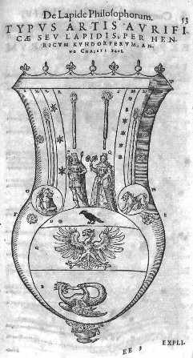
Libavius, De Lapide Philosophorum
I. Chinois
Les Chinois n'ont rien qui ressemble à un système d'idées chimiques, du moins avant le Moyen Âge ; mais, comme l'auteur le fait observer, leur médecine, leur métallurgie et plusieurs de leurs arts, sont susceptibles de fournir quelques documents intéressants à l'histoire de la chimie. Ainsi ils fabriquèrent pour leurs feux d'artifice de la poudre à canon, longtemps avant la nôtre, et cependant avec les mêmes proportions de nitre, de soufre et de charbon ; mais l'auteur, en avançant que l'idée de la faire servir aux armes ne se présenta pas à leur esprit, et qu'ils durent aux Européens l'usage des armes à feu, est en contradiction avec le père Amiot, qui s'exprime en ces termes (Mémoires concernant l'histoire, les sciences, etc. des Chinois, t. VIII, p. 331) :
« Je m'arrête ici un moment pour faire observer que les armes à feu étaient connues très certainement des Chinois, dès le commencement de l'ère chrétienne, puisque Koung-Ming, qui vivait alors [vers l'an 200 de notre ère], en faisait usage, comme je le dirai bientôt en décrivant sa manière. Ce fait est attesté par tous les historiens, qui ne disent pas simplement que Koung-Ming en faisait usage, mais qu'il s'en servait avec plus de succès qu'aucun autre, ce qui suppose que les autres s'en servaient aussi. »
Les Chinois furent les premiers à fabriquer la porcelaine, et, à ce sujet, le Dr Hoefer fait l'histoire des travaux auxquels cette poterie donna lieu en Europe au XVIIIe siècle ; ils surent préparer différents alliages, notamment le bronze, le laiton, le parfong, dès la plus haute antiquité ; de 2400 à 1200 ans avant J.-C., l'or, l'argent et le cuivre, servaient à leurs échanges ; mais, s'ils connurent ces métaux, ainsi que le plomb, l'étain, le zinc et le fer, ils n'étaient pas avancés en métallurgie, et ils reçurent de l'Europe, très probablement, l'usage des acides minéraux employés comme dissolvants. Si l'on ne peut douter de l'ancienneté des notions que les Chinois avaient sur les sujets précités, il est vrai, pourtant, qu'on se trouve aujourd'hui dans l'impossibilité de mettre aucune date précise à la plupart de ces notions, et qu'il est même difficile de démontrer qu'au premier siècle de notre ère ils possédaient réellement toutes celles que le Dr Hoefer leur attribue, notamment l'idée de la transmutation des métaux.
II. Indiens (Indonésiens)
Même incertitude pour les connaissances des Indiens ; si tout porte à croire, comme le dit le docteur Hoefer, que ces peuples surent, à l'instar des Chinois, tirer de la terre et travailler plusieurs métaux, fabriquer l'acier wootz, un certain nombre d'alliages métalliques, se servir de borax pour la soudure, préparer des matières colorantes, telles que l'indigo, la garance, qu'ils appliquaient ensuite sur les étoffes ; cependant la difficulté d'assigner des dates certaines à l'origine de leurs connaissances subsiste toujours. Le Dr Hoefer fait remarquer l'analogie de plusieurs de leurs idées spéculatives avec celles des philosophes de l'Occident. Par exemple, suivant eux, cinq éléments, la terre, l'eau, l'air, le feu et l'éther, constituent la matière ; leurs corps simples sont donc ceux d'Aristote ; en outre, l'analogie de leur opinion sur la transmigration des âmes avec la doctrine de la métempsychose des Égyptiens, et avec plusieurs points de la philosophie de Pythagore, est encore de toute évidence.
III. Égyptiens, Phéniciens, Hébreux
Comme tout le monde sait, les arts furent cultivés par les Égyptiens dès l'antiquité la plus reculée ; les monuments que le temps a respectés, et les débris de ceux qui ne sont plus, attestent leur habileté et la variété de leurs procédés, comme les voyages des philosophes en Égypte nous montrent qu'ils avaient devancé les Grecs dans la culture de la science proprement dite. Les Phéniciens se livrèrent aussi de bonne heure, non seulement au commerce le plus étendu dont l'histoire ancienne ait transmis le souvenir, mais encore à la pratique de plusieurs arts ; enfin les Hébreux, dans les relations qu'ils eurent avec les Égyptiens et les Phéniciens, s'approprièrent quelques-uns des procédés de ces peuples. Le Dr Hoefer, après quelques considérations générales, examine des objets spéciaux dans les paragraphes suivants :
§ 1. De l'origine de la science
2. Pain - Froment - Vin - bière - Huile.
3. Métallurgie - Or - Argent - Airain - Fer, etc.
4. Monnaies
5. Étoffes
6. Blanchiment
7. Teinture
8. Écriture - Encre
9. Pierres précieuses
10. Verres - Pierres précieuses artificielles
11. Embaumement
Le Dr Hoefer, n'admettant pas, avec raison, l'authenticité des écrits chimiques attribués à Hermès Trismégiste, ne considère les Égyptiens, les Phéniciens et les Hébreux, que sous le rapport des connaissances qu'ils pouvaient avoir dans les arts du ressort des actions moléculaires. en parlant de leur métallurgie, il combat l'opinion de ceux qui, comme Stahl, ont cru que Moïse avait dissous le veau d'or dans un liquide, après l'avoir passé au feu. [cf. notre voie humide, où nous discutons de ce point] Suivant lui, le veau d'or, qui paraîtrait avoir été en bois recouvert de lames de ce métal, aurait été brûlé, ou littéralement détruit dans le feu, et le résidu, moulu en petites parcelles, aurait été jeté dans l'eau que Moïse fit boire ensuite aux fils d'Israël. Il est évident que, en adoptant cette interprétation, il n'est plus nécessaire de recourir à un dissolvant, puisque le résidu métallique du veau d'or, détruit par le feu, aurait été simplement soumis à une division mécanique, puis mis en suspension dans l'eau. [ce point ne laisse pas d'être fort obscur puisqu'un tel breuvage eut décimé le peuple des Hébreux...] Le Dr Hoefer discute encore la question de savoir si, du temps de Moïse, les Hébreux se servaient d'épées, de couteaux, de cognées, en fer aciéré et trempé ; tout en admettant que les Hébreux connaissaient le fer, il trouve, dans les textes mêmes cités par Goguet à l'appui de l'opinion précédente, la preuve du contraire. Il admet que les Égyptiens purifiaient l'or et l'argent par la coupellation, en faisant usage du plomb et des cendres des végétaux ; mais il leur refuse, comme aux Chinois, la connaissance des acides minéraux employés au traitement des matières métalliques.
IIème section - De 640 ans avant J.-C. au IIIe siècle après J.-C.
IV. Grecs, Romains
Dans des considérations générales, le Dr Hoefer fait remarquer la disposition des Grecs à imaginer des systèmes, des théories, sans s'astreindre aux détails de la pratique, pour l'opposer à la disposition qui portait les Romains aux applications utiles plutôt qu'aux conceptions abstraites de l'intelligence. Les Grecs conservèrent l'esprit qui les distinguait, sous la domination romaine, et, lorsqu'ils en furent affranchis par la chute de l'empire d'Occident, ils établirent le siège principal de leurs sciences et de leurs arts dans Byzance, capitale de l'empire d'Orient. La distribution des matières de cette section diffère de celle que l'auteur a faite des matières de la précédente. Ainsi une première partie comprend la théorie, et une seconde, la pratique.
A. Partie théorique - Systèmes des philosophes de la Grèce
Voici les paragraphes de cette partie : [cf. aussi Idée alchimique, V]
§ 1. École ionienne- Thalès
2. Anaximandre
3. Anaximène
4. École de Pythagore
5. École éléatique
6 et 7. Philosophie d'Héraclite - Hippocrate
8. Philosophie d'Empédocle
9. Philosophie de Leucippe et de Démocrite
10. Démocrite
11. Philosophie d'Anaxagoras
12 et 13. Philosophie de Diogène d'Apollonie et d'Archélaüs
14. Des sophistes
15. Platon
16. Aristote
17. Théophraste
18. résumé
Le principe qui dirige surtout l'auteur, dans l'exposé qu'il trace des systèmes de la philosophie grecque, consiste essentiellement à présenter un résumé très concis de chacun d'eux, en insistant particulièrement sur des analogies que ces systèmes lui semblent avoir avec des opinions actuelles ; mais, quand il conjecture que ce qui est vrai pour les modernes, dans la philosophie grecque, reposait sur des faits exactement observés et décrits dans des recueils aujourd'hui perdus, il énonce une opinion plus favorable à la science antique que celle qu'on lui aurait prêtée, ce nous semble, d'après ce qu'il a dit, dans la première section, à propos de l'origine de la science chez les Égyptiens. Le Dr Hoefer, en citant plusieurs passages du traité des airs, des eaux et des lieux, d'Hippocrate, pour les réfuter, nous paraît agir avec beaucoup de sévérité, en ne tenant pas assez compte des temps où ce traité fut écrit. Peut-être même qu'un des passages qu'il critique serait justifié, si on l'interprétait autrement qu'il ne l'a fait. Voici ce passage tel que le Dr Hoefer l'a traduit :
C. 42. « Ceux qui regardent les eaux salines comme purgatives almura udata, se trompent. Loin de là, elles sont contraires aux évacuations, elles resserrent le ventre plutôt qu'elles ne le relâchent. »
« Ceci revient à dire, ajoute le Dr Hoefer, que les sels alcalins ne sont pas purgatifs ; car ce sont précisément ces sels qui se trouvent le plus ordinairement dissous dans l'eau. »
Cette critique nous paraît fondée, si l'expression almura udata doit être traduite par eaux salines, c'est-à-dire, si Hippocrate a voulu désigner des eaux médicinales renfermant du sulfate de soude, du sulfate de magnésie, etc. ; mais, s'il a eu l'intention de désigner des eaux salées comme celles de la mer, où domine le chlorure de sodium (sel marin), la critique n'est plus aussi juste : car, d'après des recherches qui nous sont particulières, si l'on ne peut nier que, dans certains cas, l'eau de la mer agisse à la manière des eaux purgatives, cependant elle agit, dans beaucoup d'autres, de la manière contraire, et alors l'action qu'elle exerce à l'intérieur est tonique, comme celle qu'elle exerce à l'extérieur.
B. Partie pratique
Elle comprend les connaissances qui se rattachent à la chimie dite minérale ou inorganique, et les connaissances relatives à la chimie organique. Nous allons donner les titres des paragraphes où elles sont exposées.
I. Chimie minérale
§ 19. Métallurgie - Alliages
20. Métallurgie - Exploitation des mines
21. alliages d'or, d'argent et de cuivre - Moyen de purification - Coupellation
22. Monnaies
23. Connaissance des propriétés des métaux - Des composés ou des préparations métalliques
24. Argent
25. Cuivre
26. Zinc
27. Fer
28. Manganèse
29. Plomb
30. Etain
31. Mercure
32. arsenic
33. Antimoine
34. Soufre
35. Sels alcalins
36. Savons
37. Nitre
38. Sel marin
39. Sel ammoniac
40. Alun
41. poterie
42. Vases murrhins
43. Verres
44. Verres colorés
45. Couleurs
46. Pourpre
47. Couleurs rouge et jaune
48. Couleur bleue
49. Violet
50. Couleur verte
51. Chrysocolle
52. Couleurs noires
53. Couleur blanche
54. Application des couleurs
55. Minerais - Mortiers, plâtre
56. Air - Corps aériformes
57. Eaux - Eaux minérales
58. Feu
59. Aérolithes
[cf. notre prima materia - chimie et alchimie - Mercure philosophique]
2. Chimie organique
60. Documents concernant la chimie organique
61. Engrais
62. Vins
63. Vinaigre
64. Sucre
65. Miel
66. Cire
67. Farine
68. Amidon
69. De quelques végétaux et de leurs produits
70. Suc de grenade
71. Encres - Encre sympathique
72 et 73. Sucs de pavot, de laitue, de figuier
74. Papier (charta)
75. Gommes
76. Liqueurs, lin, coton, tissus incombustibles
77. Charbons
78. Embaumements, conservation des fruits
79. Oeufs
80. Lait
81. Poisons
82. Des poisons lents
On voit, par l'énumération même des titres des paragraphes précédents, combien les sujets traités par l'auteur sont nombreux et variés. Ne pouvant les examiner en particulier, nous en recommanderons la lecture, parce que, sans doute, elle intéressera vivement tous ceux qui veulent voir réunis les documents les plus importants que l'érudition puisse fournir à l'histoire des procédés chimiques pratiqués dans l'antiquité. Il est à désirer que l'on cherche à reconstituer l'art chimique ancien, non par des hypothèses, mais par des travaux positifs, dont l'objet essentiel serait d'abord de déterminer les principes matériels constituant les matériaux que l'art antique a mis en oeuvre, et de soumettre ensuite à l'expérience les conséquences déduites des déterminations de l'analyse chimique. Les avantages de pareilles recherches, pour éclaircir certains textes, pour retrouver l'état de l'industrie chez les anciens peuples, et pour donner d'utiles indications à nos arts, sont incontestables. En effet, si les analyses de plusieurs alliages métalliques, et en particulier celles des monnaies, ont jeté quelque jour sur la métallurgie des anciens ; si l'examen, par l'illustre H. Davy, de
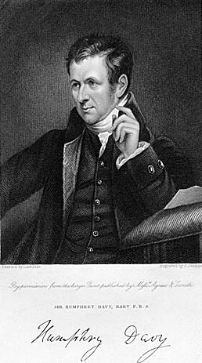
Humphrey Davy
matières colorées trouvées à Pompéi, a fait connaître quelques-unes des des couleurs employées dans l'antiquité ; si la description, donnée par Vitruve, d'un procédé propre à composer une belle couleur bleue au moyen de la calcination d'un mélange de cuivre, de sable et de sel marin, a conduit les modernes à reproduire cette couleur ; si l'analyse a dévoilé les compositions des mortiers antiques les plus propres à résister aux actions séculaires du temps, que serait-ce, dans une nation comme la nôtre où un corps unique comprend presque toutes les connaissances humaines, représentées en cinq académies, parmi lesquelles il en est une spécialement instituée pour rassembler les matériaux et les documents de tout genre concernant les anciens peuples, si les efforts individuels des travailleurs étaient coordonnés de manière à se diriger dans des voies diverses qui convergeraient vers un but unique ! Le Dr Hoefer nous paraît avoir tout ce qu'il faut pour se livrer avec succès à des recherches d'érudition appliquées à l'histoire des sciences naturelles ; car, à la connaissance de ces sciences, qu'il possède comme médecin, il joint encore celle de plusieurs langues orientales. L'intérêt qu'il nous inspire, et le désir que nous avons de lui voir améliorer son estimable Histoire de la chimie, nous engagent à lui soumettre quelques observations. L'impossibilité d'assigner aujourd'hui, dans l'antiquité, des dates certaines, soit aux découvertes de faits du ressort de la chimie, tels que des procédés d'arts par exemple, soit à l'origine de certaines idées dont les rapports avec cette science sont plus ou moins intimes, nous fait penser que le Dr Hoefer, au lieu de définir les deux sections que nous venons d'examiner par des limites chronologiques, eût trouvé plus de facilité dans l'exposition de ses idées, s'il eût réservé une section particulière à chacun des peuples dont il a parlé, afin de développer, d'une manière continue, ce qu'un peuple en particulier a fait pour la chimie, depuis les temps les plus reculés jusqu'à une certaine époque, celle, par exemple, de l'origine de l'art sacré, à l'histoire duquel la troisième section est exclusivement consacrée. [cf. l'Idée alchimique] Il aurait évité par là l'inconvénient de laisser croire à beaucoup de ses lecteurs que les peuples dont il parle dans la première section, notamment les Chinois et les Indiens, avaient toutes les connaissances qu'il leur attribue 640 ans au moins avant J.-C., et que, à partir de là jusqu'au IIIe siècle de l'ère chrétienne, les connaissances nouvelles relatives à la chimie vinrent exclusivement des Grecs et des Romains, auxquels la deuxième section est réservée. Enfin, en subordonnant à une méthode précise la distribution des matériaux que chaque peuple a donnés à l'histoire de la chimie, l'ouvrage aurait gagné en clarté, en précision et en intérêt. Nous poursuivrons l'examen de l'ouvrage dans de nouveaux articles.
E. Chevreul
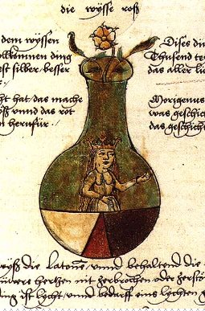
Alchimistisches manuscript, 1550, Ms. L IV , UB, Basel
Ière ÉPOQUE. - 3ème SECTION. Du IIIe siècle au IXe siècle après J. C.
Nous avons examiné précédemment les deux premières sections de la première époque de l'histoire de la chimie du Dr Hoefer. Nous consacrons cet article à la 3ème section, qui, commençant au IIIe siècle, finit au IXe de l'ère chrétienne. A cette section appartiennent les détails relatifs à l'origine de la chimie proprement dite, l'exposé de procédés et de recherches d'un ordre particulier, qui ont pour caractère spécial d'avoir donné, après plusieurs siècles, les matériaux dont la coordination a enfin constitué la chimie telle que nous l'avons définie dans notre premier article. Lorsqu'on réfléchit aux discussions qui s'élevèrent entre les derniers païens et les Chrétiens des premiers siècles, on s'explique bientôt cette multitude de propositions philosophiques et métaphysiques émises comme arguments par ceux qui y prenaient part, soit en faveur du système qu'ils défendaient ou soutenaient, soit contre le système qu'ils voulaient repousser comme innovation dangereuse ou détruire comme doctrine impie, dont, à leurs yeux, le règne n'avait que trop duré. Parmi les opinions que la pensée religieuse exposa au grand jour, il y en eut, sans doute, qui appartenaient aux doctrines secrètes, car les débats continus dont ces opinions, étaient l'objet tendaient nécessairement à renverser les barrières que les adversaires du nouveau culte avaient élevées entre le sanctuaire de leurs temples et les profanes auxquels était interdite l'initiation aux mystères. C'est aux premiers siècles de notre ère et non au delà, pendant que tant de graves questions s'agitaient, que remontent les plus anciens écrits où il soit fait mention d'une science sacrée, d'un art divin et sacré, et cette science n'est clairement désignée sous le nom de chimie ou d'alchimie que par des écrivains du IVe et du Ve siécle, comme Julius Firmicus et Zosime de Panopolis [Dans un ouvrage attribué à Julius Firmicus, qui vivait au IVe siécle, on trouve l'expression de scientia alchemiae. Le Dr Hoefer fait remarquer, à ce sujet, que le texte de l'ouvrage renferme une multitude de termes grecs ou latins accolés à des mots d'origine chaldéenne ou persane; et que c'est là ce qui explique, dans le mot alchirnie, l'emploi de l'article AL. Sans discuter ici la question de l'authenticité du livre attribué à Firmicus, authenticité qui n'était pas démontrée à Boerhaave, nous prévenons le lecteur que nous ferons usage, dans cet article, dut mot alchimie pour désigner simplement l'art prétendu de faire de l'or ou de la transmutation des métaux, sans trancher la question de savoir si ce mot est ou n'est pas d'origine arabe - note de E. Chevreul].
Mais, quelque probable que paraisse l'opinion d'après laquelle on admet, conformément à ces écrits, que les prêtres égyptiens s'occupaient de l'art sacré dans leurs temples, et que cet art comprenait quelques pratiques chimiques, nous ne pouvons donner notre assentiment à la manière dont le Dr Hoefer énonce et développe cette opinion, afin de faire partager ses convictions à ses lecteurs ; nous allons laisser parler l'auteur avant de nous livrer à aucune réflexion sur la méthode d'exposition qu'il a cru devoir adopter :
« Le laboratoire du temple, dit le Dr Hoefer, avait fourni le fait; l'imagination du prêtre, la théorie. Voilà, selon moi, en partie, la source véritable de toute la sagesse hiéroglyphique des prêtres de l'Egypte. Le chimiste agrége et désagrège, combine et décompose la matière sur laquelle il opére, Eh bien, l'initié de l'art sacré était persuadé de pouvoir faire en petit ce que le démiurge, ou le dieu créateur, avait fait en grand ; et, aux yeux du vulgaire, le prêtre n'était pas seulement le représentant, mais en quelque sorte un abrégé de la divinité. L'opinion que je viens d'émettre sera, j'ose l'espérer, confirmée par les documents que je fournirai à son appui [...]
« Pratique et théorie de l'art sacré. - Effaçons de notre mémoire toutes les découvertes faites pendant le laps de temps qui nous sépare de Constantin ou de Théodose le Grand ; transportons-nous un moment par la pensée dans le laboratoire de Zosime, ou d'un des grands maîtres de l'art sacré ; assistons en initiés à quelques-unes des opérations de l'art sacré. »Le Dr Hoefer expose sept faits : ces faits sont la pratique ; il en déduit des conséquences, qui sont la théorie. Nous choisissons ceux qui nous semblent les plus propres à faire comprendre notre manière de voir. [voir aussi la section sur le Mercure où nous reprenons certains de ces faits]
« 1° On chauffe de l'eau ordinaire, dit l'auteur, dans un vase ouvert; l'eau bout, elle se réduit en un corps aériforme (vapeur) et laisse au fond du vase une terre pulvérulente, blanche. Conclusion: L'eau se change en air et en terre. Supposez que nous n'eussions aucune idée de l'existence des matières que l'eau tient en dissolution, et qui, après la vaporisation, se déposent au fond du vase : qu'aurions- nous à objecter contre cette conclusion, qui a certainement prêté son appui à la fameuse théorie de la transmutation des éléments ? Il ne manquait plus que le feu pour que la transmutation fût complète.
2° On porte un fer rougi au feu sous une cloche maintenue sur une cuvette pleine d'eau; le volume d'eau diminue; une bougie portée sous la cloche allume aussitôt l'air qui s'y trouve. Conclusion: L'eau se change en feu. Cette conclusion était toute naturelle, à une époque où l'on ne savait pas encore que l'eau se compose de deux corps aériformes (oxygéne et hydrogène), que l'un (oxygène) est absorbé par le fer, et que l'autre (hydrogène) s'échappe sous la cloche en prenant la place de l'air atmosphérique qui s'y trouve, et que c'est l'hydrogène qui s'allume au contact d'une flamme.
3° On brûle (calcine) du plomb, ou tout autre métal (excepté l'or et l'argent) au contact de l'air; il perd aussitôt ses propriétés.primitives et se transforme en une substance pulvérulente, en une espèce de cendre ou de chaux. En reprenant ces cendres, qui sont le résultat de la mort du métal, et en les chauffânt dans un creuset avec des grains de froment, on voit bientôt le métal renaître de ses cendres et reprendre sa forme et ses propriétés premières. Conclusion: Le métal que le feu détruit est revivifié par les grains de froment et par l'action de la chaleur. N'est-ce pas là opérer le miracle de la résurrection sur une petite échelle ? Il n'y a rien à objecter contre cette conclusion, puisqu'on ignore complétement le phénomène de l'oxydation et de la réduction des oxydes au moyen du charbon ou d'un corps organique riche en carbone, tel que le sucre, la farine, les semences, etc. Les grains de froment étaient le symbole de la vie, et, par extension, le symbole de la résurrection et de la vie éternelle, non pas tant parce qu'ils servaient de principale nourriture à l'homme, mais plutôt parce qu'ils étaient employés pour ressusciter et revivifier les métaux morts ou réduits en cendre. »
Si les conjectures sont permises à l'historien pour donner à des faits qui manquent de cohérence une liaison propre à fixer l'attention du lecteur, à les graver dans sa mémoire et à provoquer même de sa part quelque recherche, c'est toujours, à la condition expresse qu'elles seront présentées avec réserve, et non comme des réalités. Mais il y a loin de cette manière de procéder à celle que le Dr Hoefer a suivie dans l'exposition qu'il a faite de ce qu'était, suivant lui, l'art sacré des temples de l'Egypte. Ce qu'il donne pour des faits sont des suppositions, desquelles il tire des conclusions, dont quelques-unes ne peuvent être admises comme légitimes qu'après de nouvelles suppositions. Il y a plus, quelques faits manquent de précision, le second, par exemple, décrit en ces termes :
« On porte un fer rougi au feu sous une cloche maintenue sur une cuvette pleine d'eau, le volume d'eau diminue, etc.. »
Il est, dit, au second alinéa suivant, que la cloche est pleine d'air et que l'hydrogène en prend la place; nous ne savons pas si le Dr Hoefer a fait l'expérience dont il parle, mais il nous semble difficile de l'exécuter en en obtenant tous les résultats qu'il annonce : par exemple, si l'eau diminue de volume, c'est assurément à cause de la vapeur produite et non à cause de l'hydrogène dégagé, car 1700 volumes de ce gaz ne représentent qu'un seul volume d'eau ; d'un autre côté, recueillir dans une cloche pleine d'air de l'hydrogène qui n'y est pas, conduit jusqu'au haut par un tube, est une chose fort difficile, surtout lorsqu'on veut en faire développer dans une cuvette une quantité suffisante pour rendre l'atmosphère de la cloche inflammable. Qu'on nous permette ces détails, afin qu'il n'y ait pas de doute possible sur les inconvénients que nous voulons signaler. Peut-on admettre la conclusion que l'auteur tire du troisième fait, la réduction de l'oxyde de plomb par des grains dé froment, opération propre à montrer le miracle de la résurrection sur une petite échelle ? et suffit-il d'une simple assertion pour faire adopter la conclusion suivante :
« que les grains de froment étaient le symbole de la vie, et, par extension, le symbole de la résurrection et de la vie éternelle, non pas tant parce qu'ils servaient de principale nourriture à l'homme, mais plutôt parce qu'ils étaient employés pour ressusciter et revivifer les métaux morts ou réduits en cendres ? »
Nous ne le pensons pas. [le passage que cite Chevreul est des plus intéressants. Car, bien des fois, Hoefer cite ou parle des textes alchimiques en nous assurant de leur caractère abscons ; mais ce qu'il cite ne l'est pas moins. Du moins pour des yeux de rationaliste, car un cabaliste comprendra l'allégorie, au demeurant facile à deviner, qui se cache derrière cette histoire de grains de froment] Parmi les quatre faits que nous omettons de mentionner, il en est deux, le quatrième et le septième, qui sont assurément connus depuis longtemps ; mais l'étaient-ils des prêtres égyptiens ? c'est ce que l'auteur aurait dû prouver. Si l'on admet, avec le Dr Hoefer, que ces prêtres reconnaissaient la doctrine des quatre éléments, il nous semble, avant d'exposer le premier fait applicable à la conversion de l'eau en air et en terre, et le second applicable à la conversion de l'eau en feu, qu'il aurait fallu expliquer au lecteur, par des considérations précises, comment cette doctrine était compatible avec celle de la transmutation de l'eau en terre, en air et en, feu, car il est difficile de le concevoir sans ces considérations, et avec les idées que l'on a généralement d'un élément.[la réflexion est d'importance. Il faut lire certains textes alchimiques si l'on veut espérer comprendre ce que leurs auteurs entendaient derrière les quatre éléments, et leur éventuelle transformation. Il semble que les Douze Portes de Ripley constitue le meilleur texte d'introduction à cette doctrine de la ronde des éléments.] En effet, il est bien peu de personnes pour lesquelles le mot élément ne signifie pas aujourd'hui un corps essentiellement simple et essentiellement distinct par l'ensemble de ses propriétés de tout autre corps ; et cela est si vrai, que les chimistes qui ont attaché de l'importance aux définitions, en parlant des corps simples de la science moderne, n'ont pas négligé de faire remarquer que, loin de considérer la simplicité de ces corps comme absolue, ils la considéraient, au contraire, comme relative à la puissance des procédés dont l'analyse chimique dispose actuellement ; qu'en conséquence, à leurs yeux, l'essence des corps qu'ils appellent simples n'est pas nécessairement démontrée par le fait seul de l'impuissance de l'analyse à réduire chacun d'eux en plusieurs sortes de matières, et que, sous ce rapport, l'expression de corps simples n'est pas synonyme du mot éléments employé par les anciens chimistes pour désigner la terre, l'eau, l'air et le feu, considérés comme principes de toutes choses. [on le voit encore à notre époque, où aux atomes, réputés insécables au XIXe siècle, on est allé, par l'expérience, réduire en gluons et en fermions, puis en particules telles que les quarks, qui sont confinés et dont on ne peut être assuré de l'existence que par des traces indirectes] Mais, si, en faisant cette remarque, nous ne prétendons pas établir l'incompatibilité des deux manières de voir, parce que nous savons qu'elles se conciliaient ensemble dans les idées de la plupart des philosophes de l'antiquité, de Pythagore, d'Aristote et d'Ocellus Lucanus, notamment, nous voulons exprimer notre étonnement de ce qu'elle n'ait pas été faite, plus tôt, par la raison que confondre dans une même expression la théorie des quatre éléments et une théorie suivant laquelle ces quatre éléments ne sont que des formes différentes d'une matière unique, c'est évidemment maintenir la confusion où l'historien de la science aurait dut porter le flambeau de la critique. Le Dr Hoefer termine son article en disant:
« Les expériences et les opérations que je viens d'indiquer, et dont il serait inutile de multiplier le nombre, étaient connues depuis longtemps ; les prêtres d'Isis et les initiés de l'art sacré devaient avoir journellement l'occasion de les exécuter dans les laboratoires de leurs temples. »
Mais c'est là précisément ce que nous aurions désiré que l'auteur prouvât : Quels que soient les motifs de croire à l'importance que la doctrine des prêtres de l'Égypte accordait aux idées qui concernent les changements que subit perpétuellement la matière à la surface de la terre, et là surtout où se trouvent réunis à la fois l'air, l'eau, les corps vivants et leurs débris, quelle que soit l'analogie qu'on apercoive entre ces idées et celles de la rnétempsycose, de la transmutation de la matière en général et des métaux en particulier, on est pourtant obligé de reconnaître l'impossibilité de savoir aujourd'hui exactement ce qu'était au fond cette doctrine secrète, et en quoi consistait réellement la pratique de l'art sacré; [consultez sur le sujet les Origines de l'alchimie, de M. Berthelot - Gallica, bnf] et, il faut bien le reconnaître avec nous, rien n'a plus contribué à obscurcir la vérité que la tendance des premiers écrivains chimistes ou alchimistes à faire croire à l'ancienneté de leur science, soit en mentionnant des écrits imaginaires, soit en en attribuant d'autres à des personnages morts depuis plusieurs siécles ; et ajoutons enfin cette circonstance, que la critique moderne n'a pas toujours suffisamment prouvé que des manuscrits postérieurs au XIIe siècle sont des copies reproduisant fidèlement les ouvrages dont les auteurs auxquels on les attribue vécurent aux premiers siècles de l'ère chrétienne. Dans cet état de choses, il eût donc été convenable de réunir tous les faits propres à établir les probabilités de l'opinion professée par le Dr Hoefer, au lieu de supposer des faits recueillis par l'observation, qu'on présente sous la forme expérimentale, afin de démontrer une doctrine, une théorie. Cette forme, adoptée par l'auteur, ayant à nos yeux le grave inconvénient de pouvoir faire croire à beaucoup de lecteurs qu'il existait, dans l'intérieur des temples de l'Égypte, un mode de démontrer des phénomènes du ressort de la philosophie naturelle, basé sur la méthode expérimentale, nous croyons utile de reprendre ce sujet à la fin de cet article ; en procédant ainsi, le lecteur ne perdra pas de vue l'ordre de succession des matières traitées par l'auteur. Le Dr Hoefer, à propos des peines infligées aux initiés coupables de parjure, prétend que les statues d'Harpocrate, placées dans les rues et les carrefours, étaient là afin de rappeler sans cesse aux initiés les serments qu'ils avaient prêtés, de ne révéler aux profanes aucun des mystères qui leur avaient été dévoilés dans le temple [sur Harpocrate et Horus, voir les Fables Egyptiennes et Grecques de Dom Pernety et la section Cambriel]; et c'est pourquoi le nom d'Harpocrate, Moth en langue égyptienne, rappelait un mot hébreu qui signifie mort, mourir.
« Quel était, dit le Dr Hoefer, le genre de mort infligé aux sacrilège ? le poison ....»
et il ajoute :
« Je serai assez heureux pour démontrer que le poison avec lequel on faisait périr ceux qui avaient trahi leurs serments était précisément le poison le plus énergique que l'on connaisse, et dont l'action est presque aussi instantanée que celle de la foudre : c'est avoir nommé l'acide prussique. »
Selon M. Duteil, auteur d'un dictionnaire des hiéroglyphes, on lit, sur un des papyrus du Louvre : « Ne prononcez pas le nom de IAO, sous la peine du pêcher. » Après avoir rappelé que la feuille de cet arbre était consacrée au dieu du silence, non parce que sa forme est celle de la langue, comme le pensait Plutarque, mais, suivant le Dr Hoefer, parce que l'amande du noyau de la pêche, pilée et distillée avec de l'eau, donne un produit excessivement délétère, à cause de l'acide prussique qu'il contient ; et tel était, prétend-il, le poison qu'on faisait boire aux parjures. Quant à l'objection tirée de ce que la découverte de l'alambic est généralement attribuée à Albucasis ou à Arnauld de Villeneuve, qui vivaient aux XIIe et XIIIe siècles, il. fait remarquer que, dès le Ve siècle, Zosime connaissait cet appareil, et nous ajouterons que l'illustre M. A. de Humboldt pense que la distillation était déjà pratiquée au Ier siècle de l'ère chrétienne.
Le Dr Hoefer,en parlant des mystères que les Anciens attachaient aux idées de certains nombres, de certaines figures de géométrie, des lettres de l'alphabet, continue un sujet qu'il a commencé déjà de traiter, particuiiérement à l'article de Pythagore ; il se borne à des généralités dont on n'aperçoit pas les rapports avec la chimie, comme on en aperçoit dans ce qu'il dit ensuite des animaux, des plantes et de plusieurs produits de l'organisation, tels que le lait, le sang, l'oeuf...; mais, sans encourir le reproche de diffusion, il aurait pu, entrer, à ce sujet, dans plus de détails qu'il ne l'a fait. Aprés avoir défini la pierre philosophale une substance ayant la vertu de transformer les métaux imparfaits en or et en argent, et de procurer ainsi immédiatement la richesse, il mentionne deux autres pierres philosophales : l'une, à l'état liquide, pour ainsi dire, portait la dénomination de panacée universelle, à laquelle on attibuait la vertu de guérir toutes les maladies et de prolonger la vie au delà du terme moyen, et l'autre, à l'état spirituel, pour ainsi dire, était l'âme du monde, douée de la vertu de donner à celui qui la possédait la faculté de jouir, par anticipation, dans la communauté des démons, des anges et des esprits, de ce bonheur qu'il lui avait été impossible de se procurer par la voie naturelle.[il y a là beaucoup à dire. Cet état spirituel, selon nous, correspond à un certain état de l'un des composants de la « Pierre », mot que nous mettons entre guillemets pour bien faire comprendre qu'il ne s'agit en aucun cas de la pierre philosophale, mais de la matière d'allure vitreuse et de forme cristalline que les Adeptes devaient pouvoir préparer. Cette pierre comportait trois composants dont nous avons beaucoup parlé ailleurs. Il suffira de dire ici qu'on y distinguait l'agent, le patient et le moyen. l'agent comme Soufre, l'arsenic comme patient et le Mercure comme moyen - milieu- qui était l'esprit. Toute la difficulté de l'entreprise résidait dans le moyen de volatiliser l'agent par l'entremise de l'esprit, qui se l'incorporait sous une forme sublimée, dont la nature pouvait varier, mais non point la forme. Il s'agissait d'un métal brûlé ou chaux métallique des Anciens, dont le secret était de savoir le tenir au feu suffisamment longtemps, pour que sa réincrudation s'accompagnât d'une cristallisation.]
Si, par extension, l'on peut considérer la panacée universelle comme une pierre philosophale à l'état liquide, nous avouons ne pas concevoir le rapprochement établi par l'auteur, entre ce qu'on a appelé l'âme du monde et une pierre philosophale à l'état spirituel. [poursuivant ce que nous venons juste de dire, l'âme du monde ne peut être que le soufre sublimé, non encore réincrudé dans le corps ou arsenic - les alchimistes ont en général utilisé les termes de corps, sel ou arsenic pour désigner la matière terreuse de leur pierre -. Quant à l'état spirituel, c'est l'état du soufre sublimé dans le Mercure, apparemment détruit, qui a fourni la source de tant de fables et d'allégories portant sur l'oeuvre au noir ou la putréfaction. Tout ceci s'entendant, bien sûr, de la voie sèche.]
De la pierre philosophale, l'auteur passe, nous ne dirons pas à l'examen des doctrines mystiques des philosophes néoplatoniciens de l'école d'Alexandrie, mais à l'exposé de quelques notes concernant la biographie et les opinions d'Ammonius, de Plotin, de Porphyre, de Jamblique1 et de Proclus2. Il rappelle, au sujet de Plotin, disciple d'Ammonius, qu'il considérait la lumière comme le véhicule des âmes qui abandonnaient les régions célestes pour animer les germes [Fulcanelli nous dit que tout le secret de l'oeuvre consiste à savoir capter un rayon de soleil pour le corporifier ; le véhicule de l'âme, c'est l'esprit et le germe n'est autre que la partie terreuse de la pierre] des animaux et des plantes en s'y incorporant; il rappelle que Porphyre considérait l'âme comme associée à un certain corps subtil aérien (pneuma), qui rend possible l'union de l'âme immatérielle avec un corps matériel [c'est nommer le Mercure ; il n'est aérien qu'en apparence. C'est l'Air firmamental de Philalèthe -]. Il montre Jamblique réunissant en corps de doctrine la théurgie et la magie, par lesquelles ceux qui les professaient prétendaient donner à l'homme le moyen de s'unir à la divinité d'une manière intime et réelle, au moyen de cérémonies mystérieuses et de paroles secrètes (symboles ou synthèmes). Jamblique, s'étant appliqué à l'étude des mystères de l'Égypte, a le plus contribué à préconiser la philosophie dite hermétique, en parlant le premier, ou un des premiers, des écrits qu'il attribue à Hermès Trismégiste [sur Hermès, consultez la somme de A.J. Festugière : la Révélation d'Hermès Trismégiste, en 3 vol. Les Belles-Lettres, réed. 1990 ; Giordano Bruno et la Tradition hermétique, F. Yates, Dervy, 1986.] Enfin Proclus, qui donna de l'extension aux idées de Jamblique, adopta l'absolu ou l'unité absolue pour le principe, le centre de toutes choses. En admettant la théurgie comme une science divine, qui donnait à l'homme le moyen de communiquer avec la divinité par des symboles, il considérait Dieu comme le gouverneur du monde et le directeur des démons, qui régissaient immédiatement les minéraux, les plantes et les animaux ; et, suivant lui, le foie, le coeur, etc., étaient, chacun sous la dépendance d'un démon particulier. Le Dr Hoefer parle successivement de la magie, de la kabbale, du prétendu Hermès Trismégiste, et il termine la troisième section de la première époque de son histoire par des documents relatifs à l'art sacré. Il traite de la magie, de la kabbale et d'Hermès, comme il a traité de la pierre philosophale, comme il aurait pu le faire dans un dictionnaire, sans qu'on puisse apercevoir la raison pourquoi un sujet en précède ou en suit un autre. Il y a plus ; quelquefois le lecteur, qui est au courant de la matière, s'aperçoit que l'ordre chronologique, qui d'ailleurs était d'accord avec l'ordre rationnel, a été interverti sans motif apparent : par exemple, comme il n'est pas douteux que Jamblique a mis à contribution les idées des Chaldéens et des kabbalistes, il semble qu'avant de parler des néoplatoniciens et de Jamblique en particuiler, il aurait dû être question de la magie et de la kabbale. C'est, du reste, un reproche que l'auteur nous semble avoir encouru assez généralement dans toute la première époque de son Histoire de la chimie, que le peu de liaison existant entre les généralités qu'il donne et les faits proprement dits. Évidemment, ce qu'on désirerait le plus trouver dans une histoire de la chiimie, écrite par un homme auquel l'érudition et les langues sont plus familières que la chimie proprement dite, serait la liaison des faits partiels, clairement indiqués par la citation des sources où ils ont été puisés, avec les conséquences que l'auteur en tire; et peu importe la marche qu'il eût suivie, peu importe qu'il eût procédé dogmatiquement, en posant en principes des considérations générales justifiées ensuite par des faits, ou qu'en exposant d'abord ces faits, il en eût déduit ensuite les conséquences; nos observations critiques ne portent donc pas sur la préférence qu'il aurait dû donner à la méthode à priori, ou à la méthode à posteriori, mais sur,le défaut de liaison entre les différents matériaux qu'il a mis en oeuvre, défaut qui nuit singulièrement à l'instruction que les lecteurs pourraient puiser dans son ouvrage, estimable d'ailleurs. Voici la liste des documents relatifs à l'art sacré, tels que le Dr Hoefer les donne. Ils sont tirés de la collection des manuscrits grecs dé l'a Bibliothèque royale - 1° Noms de ceux qui ont cultivé l'art sacré ;
- 2° Des substances métalliques qui sont consacrées aux sept planètes ;
- 3° Lexiques chimiques ;
- 4° Zosime de Panopolis. Le Dr Hoefer fait vivre Zosime du IIIe au IVe siècle, et Lenglet-Dufresnoy, au commencement du Ve. Les ouvrages qu'on lui attribue n'ont point été imprimés; cependant plusieurs mériteraient de l'être, en supposant, bien entendu, que les manuscrits qui portent son nom, eussent des dates authentiques. Le Dr Hoefer, en a traduit quelques fragments, parmi lesquels on en remarque un surtout qui est extrait du Livre sur les fourneaux et les instruments de chimie. C'est la description du tribicus, ou de l'appareil à trois ballons-récipients ; [on consultera le tome IV des Alchimistes Grecs, Ecrits authentiques de Zosime Michèle Winand-Mertens, les Belles Lettres, 2003 ],
- 5° Pélage ;
- 6° Olympiodore. Il donne quelques extraits des commentaires d'Olympiodore, philosophe d'Alexandrie, sur la pierre philosophale et sur les ouvrages de Zosime, d'Hermès et d'autres philosophes. (Ms: n°2550.) ;
- 7° Démocrite (Pseudo-Démocrite). Démocrite le Mystagogue était probablement contemporain de Zosime ou d'Olympiodore ;
- 8° Synésius, ou l'auteur de commentaires sur le livre de Démocrite adressé à Dioscore, prêtre du grand Sérapis, à Alexandrie (Ms. 2270, 2325, 3226, 3227) Tout en admettant l'art de faire de l'or et l'art de faire de l'argent, il reconnaissait que l'opérateur ne crée rien, mais modifie la forme de la matière, comme le sculpteur qui change la forme du marbre ou du bois. Dans le ms. 2327, Synésius décrit un vase distillatoire en verre. Le Dr Hoefer ne dit pas pourquoi il ne considère pas avec certitude Synésius, évêque de Ptolémaïs, qui, dans sa quinzième lettre à Hypathie, a décrit le pèse-liqueur, comme étant le même que l'auteur des commentaires sur le livre de Démocrite ; cependant Lenglet-Dufresnoy n'émet aucun doute à cet égard ;
- 9° Marie ;
- 10° Discours très-savant d'un philosophe chrétien (anonyme) sur la stabilité de l'or ; [à noter que berthelot semble considérer qu'il y a eu deux philosophes, l'un Chrétien et l'autre, Anonyme. Le tome X des Alchimistes Grecs est consacré à l'Anonyme de Zuretti - voir l'Idée alchimique, VII -]
- 11° Epître d'lsis, femme d'Osiris, sur l'art sacré, adressée à son fils Horus. (Ms. 2250.). Le D° Hoefer regarde cet écrit, avec raison, nous semble, comme une satire de l'alchimie plutôt que comme un écrit sérieux sur l'art sacré ;
- 12° Liste de quelques manuscrits grecs d'alchimie (art sacré) de la Bibliothèque royale ;
- 13° Connaissances préludant à la découverte de la poudre à canon, du feu grec ou grégeois (ignis graecus) ;
- 14° Feu grégeois ; poudre à canon ;
- 15° Marcus Graecus. Il existe à la Bibliothèque royale un manuscrit latin du XIVe siècle intitulé : Liber ignium ad comburendos hostes, dont Venel, dans son excellent article chymie de l'Encyclopédie, parle en ces termes :
« Il (Bacon) a connu ou inventé la poudre à canon. Frein a soupçonné qu'il en avait pris la notion dans un manuscrit intitulé : Liber ignium etc. composé par un Grcec nommé Marc ; manuscrit que Freind avait vu, dans la bibliothèque du docteur Richard Mead, et que j'ai trouvé aussi à la Bibliothèque royale : La recette de la poudre à canon, n'est pas moins claire dans ce manuscrit que dans Bacon. »
Les proportions données par Marcus sont de six parties de nitre, une de soufre et deux de charbon. Au lieu de cette dernièree quantité, notre poudre de guerre ne contient qu'une partie de charbon. M. Ludovic Lanne, dans son Essai sur le feu grégeois et sur la poudre à canon, en mentionnant le Liber ignium, combat l'opinion de Dutens qui prétend que Marcus, son auteur, vivait avant le IXe siècle. Le Dr Hoefer est de l'avis de Dutens; il a donné, à la fin du premier volume de son Histoire de la chimie, le texte du manuscrit. [§ 28 p. 284 - Hoefer assure que Marcus Graecus vivait vers le VIIIe siècle et qu'il est antérieur au médecin arabe Mesué qui le cite au XIe siècle ; il parle du feu volant, de la purification du salpêtre et qu'on trouve, ce faisant, le sel congelé sous forme de lames cristallines. Il parlee ncore du feu grégeois, qui se prépare en prenant du soufre pur, du tartre, de la sarcorolle qui est une espèce de résine, de la poix, du salpêtre fondu, de l'huile d epétrole et de l'huile de gemme. Il décrit encore la préparation de l'eau ardente - aqua ardens qu'il semble confondre avec l'essence de térébenthine.]
- 16° Thémiste ; [§ 29 - de l'avis d'Hoefer, il n'a pas écrit une seule ligne d'alchimie. toutefois, on trouve cet extrait d'un MS. qui est peut-être de la main d'un pseudo Thémiste païen : Des éléments actifs, l'air et le feu :
« l'air universel est le ciel. Les vertus des autres corps y passent comme par un crible. C'est le premier corps diaphane qui reçoit toutes les qualités et n'enr etient aucune. Il approche de la nature sprituelle; et pour cela il est sous entendu dans le magistère des sages sous le nom d'ange, de génie, de démon, d'esprit. La région inférieure de l'air est comme la gorge d'un alambic, par où les vapeurs montent jusqu'à sa partie supérieure, où elles se condensent en nuées par le froid, et réduites en eau, elles retombent aussitôt. C'est ainsi que la nature, en sublimant et cohobant l'eau par une distillation assidue et réitérée, la rectifie et la fortifie. Dans ces opérations, la terre est à la fois la cucurbite et le récipient. »
Ce sont là les paroles d'un vrai disciple d'Hermès. La Terre, en effet, figure le SEL pour l'alchimiste. Ce sel est disposé dans le Mercure en une masse indivise que l'on nomme encore vitri oleum. On trouve dans l'Inventaire général et méthodique des manuscrits français de la Bibliothèque nationale. II (1975), dû à Léopold Delisle, sous la côte 14791-14793 un recueil de plusieurs manuscrits sur le grand œuvre, traduits par un adepte sur les originaux qui se trouvent dans différentes bibliothèques des sçavants du Levant et dans le tome I, l'Œuvre de Dieu manifestée par l'art, par Thémiste.]
- 17° La tourbe des philosophes. [il en existe deux versions en soixante douze ou soixante-dix-huit sermons ou sentences. La deuxième version est hautement préférable à la première, particulièrement corrompue dans certaines sentences]
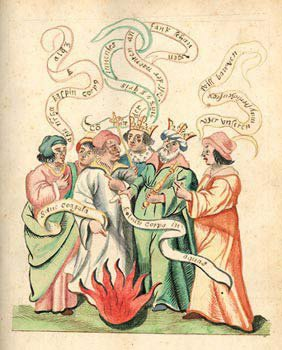
illustration de la Turba
Tel est l'exposé des matières comprises dans la 3ème section de la lère époque de l'Histoire de la chimie. En exprimant notre opinion sur la manière dont le Dr Hoefer a présenté l'état de l'art sacré dans les temples d'Égypte, nous nous sommes engagé à terminer cet article par quelques considérations générales, auxquelles nous attachons d'autant plus d'importance, qu'elles expliqueront à nos lecteurs les motifs de l'insistance que nous avons mise à critiquer cette partie de l'ouvrage, insistance dont la cause ne tient pas seulement à ce que l'auteur pose en fait ce qu'il fallait démontrer, mais surtout à l'erreur qui pourrait provenir de ce qu'on conclurait de ses paroles que des doctrines concernant des phénomènes du ressort de la philosophie naturelle auraient été communiquées à des initiés, suivant la méthode expérimentale. En effet, à notre avis, tout est contraire à l'opinion d'après laquelle on admettrait, conformément à ce que dit le Dr Hoefer, que les prêtres égyptiens professaient à des initiés une science à laquelle servaient de base des observations déduites d'expériences chirniques qu'on exécutait dans les laboratoires des temples, abstraction faite, d'ailleurs, de l'exactitude ou de l'inexactitude de l'interprétation scientifique donnée à ces observations. Nous rejetons donc, comme nullement prouvée, cette proposition : Des faits furent observés; ils donnèrent lieu à des expériences instituées pour démontrer la manière dont on les interprétait, et cette interprétation était la SCIENCE DE L'ART SACRÉ. Proposition qui revient à dire : Les prêtres égyptiens avaient fondé sur l'observation un corps de doctrine, qu'ils cherchaient à démontrer par une méthode expérimentale. Or, suivant nous, cette méthode ne date que des écrits de Galilée et de Bacon, et, en considérant ce que le génie et les institutions des peuples anciens ont eu de favorable ou de contraire au développement des sciences expérimentales et à celui de la chimie en particulier, on trouve la raison de la supériorité des Modernes sur les Anciens, en ce qui concerne les sciences physiques et naturelles, fondées sur l'expérience, dans la préférence que les premiers ont accordée à la méthode a posteriori sur la méthode a priori. C'est ce que nous allons chercher à démontrer.
Une nation remarquable par son antiquité, sa population et l'habileté qu'elle a montrée dans la pratique des arts utiles, est le peuple chinois : ce qu'il a voulu autrefois, il le veut encore aujourd'hui ; c'est l'application, c'est l'utilité immédiate des choses. Mais ni les arts chimiques, ni les arts mécaniques, ne peuvent atteindre à la perfection où ils sont parvenus dans l'Europe occidentale sans l'étude des sciences mathématiques, physiques et chimiques, cultivées au point de vue de la plus grande abstraction possible, parce que cette étude donne seule les moyens d'assujettir les procédés des arts aux préceptes et aux règles qui en assurent l'exécution, en même temps qu'elle seule préside à la confection de toute machine et de tout instrument de précision, sans lesquels les progrès des sciences du monde extérieur sont impossibles. C'est donc parce que cette étude a manqué à la Chine, que le développement de l'industrie y a été borné aux progrès que chaque art a dus aux uniques efforts des ouvriers qui l'ont pratiqué. Si nous considérons maintenant que les fonctions de l'administration de ce pays sont exclusivement dévolues aux lettrés, et que ce titre, loin d'être un privilège aristocratique, appartient à tout individu, quelle que soit son origine, qui fait preuve publique d'un savoir suffisant pour être jugé digne de l'obtenir, on voit qu'il n'y a plus de motifs pour que cet individu porte son attention, sa pensée, sur des objets dont l'étude ne le conduirait à rien, ou ne lui donnerait pas les avantages qu'il est sûr d'obtenir en s'engageant dans une voie connue, qui, toujours ouverte au savoir, a dû être l'objet constant dé son ambition. Les lettrés, appliquant leurs facultés intellectuelles à l'administration, ne sont plus tentés de se livrer à des spéculations philosophiques, qui, pour eux, seraient absolument stériles, parce qu'elles manqueraient d'utilité immédiate. Les deux causes qui, jusqu'ici, se sont, incessamment opposées aux progrès des arts et des sciences à la Chine, expliquent parfaitement le fait, si étonnant au premier abord, que les Chinois, après avoir eu connaissance de la poudre à canon, du papier, de l'imprimerie et de l'aiguille aimantée, longtemps avant les Européens, ont été bien loin pourtant d'en tirer le même parti que ces derniers, soit que l'on ait égard aux perfectionnements apportés à ces découvertes, soit qu'on ait égard à l'influence exercée par elles sur l'état de la société dans les deux populations. Si les Chinois offrent fexemple le plus frappant de ce que les arts peuvent être chez un peuple, où les sciences n'en ont jamais ni dirigé ni éclairé la pratique, et chez lequel iln'y a pas,d'ailleurs, de tendance, de la part des esprits les plus élevés, à s'occuper des idées abstraites soit des sciences, soit de la philosophie, d'un autre côté, les Hindous, leurs voisins, mais appartenant à une race fort distincte de la leur présentent à l'observateur des résultats bien différents de ceux que nous venons de mentionner. Chez les Hindous, le penchant à l'abstraction est porté au plus haut degré; ils ont imaginé des systèmes de métaphysique aussi variés qu'approfondis dans leurs détails, et, en fermant les yeux au monde visible, ils se sont engagés dans des espaces sans bornes créés par leur puissante et féconde imagination. S'ils ont pratiqué des arts sans lesquels des hommes ne peuvent exister en corps de nation, nous n'avons pas les preuves qu'ils s'y soient, en général, livrés avec autant de succès que les Chinois, et, si l'on reconnaît que le penchant aux idées abstraites et une imagination vive et variée sont des qualités de l'esprit favorables aux progrès des sciences expérimentales et des arts, c'est cependant à la condition d'avantages quelconques pour les auteurs de ces progrès; car, hors de ces conditions, les facultés de l'esprit dont nous parlons peuvent devenir des obstacles à ces progrès mêmes, parce qu'elles se concentreront sur la philosophie ou sur des sciences abstraites comme les mathématiques pures. En Égypte3, les arts étaient pratiqués avec succés déjà, dans une antiquité reculée, comme l'attestent l'histoire des monuments encore debout, et les produits variés que l'archéologie a recueillis dans ses musées : des doctrines existaient dans les temples ; les prêtres, qui en étaient les dépositaires, ne devaient les transmettre qu'à leurs successeurs et à un petit nombre de personnes choisies et éprouvées, en un mot à des initiés. Mais en quoi consistaient ces doctrines ? A notre sens, elles n'avaient rien de ce qui a trait à la science expérimentale spéculàtive ; elles concernaient certainement la religion, et la philosophie générale ; et trés probablement des connaissances d'astronomie, de mathématiques, et peut-être même quelques procédés d'arts dont les prêtres ne voulaient pas rendre la pratique vulgaire ; mais nou en excluons de prétendus moyens de faire des choses impossibles, comme sont les procédés relatifs à la transmutation des métaux, car nous ne pourrons jamais admettre comme probable q'une classe aussi élevée dans le gouvernement de l'Égypte que l'était celle des prêtres ait été, durant des siècles, livrée à une erreur aussi rnanifeste. Évidemment, avec leur intelligence, leur savoir et les idées positives que tout grand pouvoir donne à ceux qui l'exercent, ils ne purent croire au fait de se procurer de l'or ou de l'argent avec des matières dépourvues de ces métaux conformément aux idées alchimiques ; et, en supposant qu'ils eussent été conduits à croire ce fait possible à une certaine époque, d'aprés leurs idées de métempsycose, cette opinion n'aurait pas eu de durée, car, en se livrant à des expériences analogues à celles que le Dr Hoefer leur a prêtées, ils auraient dû finir, tôt ou tard, par reconnaître leur impuissance à créer la richesse métallique au moyen de la transmutation. [encore au XVIIIe siècle, Dom Pernety pensait que les Egyptiens avaient puisé leur or dans les procédés de transmutation... Cela n'empêche pas Pernety d'avoir écrit des choses fort intéressantes dans ses Fables Egyptiennes et Grecques. Cela montre simplement à quel point l'intelligence, fut-elle vive, peut être crédule -] L'enseignement du temple devait être tout dogmatique ; l'initié recevait la communication d'une doctrine dont on le croyait digne, et, si on se livrait, dans le sanctuaire, à quelque chose qu'on puisse appeler des expériences, celles-ci, loin d'avoir la science pour objet, devaient probablement frapper d'étonnement ceux qu'on en rendait témoins. Au reste, les prêtres de l'Égypte, si intéressés à conserver leur autorité, ne devaient point être portés à la culture des sciences expérimentales, essentiellement basées sur l'examen, ou, si l'on suppose qu'ils s'y soient réellement livrés, ils ne devaient pas chercher à la répandre, puisqu'ils avaient tout à perdre en propageant des doctrines qui ne pouvaient que compromettre leur domination sur l'esprit du peuple. En examinant maintenant les doctrines des philosophes grecs, qui passent pour avoir eu recours au savoir de l'antique Égypte, nous ne verrons rien qui ne s'accorde avec nos opinions : Ces philosophes ont pu puiser des idées sur la religion, le gouvernement, sur la formation du monde, sur l'astronomie, sur les nombres, etc., etc. Mais y a-t-il, dans les systèmes auxquels ils ont attaché leurs noms, quelque chose qui ressemble à une science expérimentale en général, et aux procédés alchimiques en particulier ? Non, assurément : Cependant, si les philosophes grecs avaient reçu des prêtres égyptiens quelque doctrine qui ressemblât à une science expérimentale, avaient-ils le même intérêt que ceux-ci à tenir cette doctrine secrète, et se seraient-ils tous, sans exception, engagés au silence ? et tous sans,exception, auraient-ils tenu leur engagement ? Pouvaient-ils courir plus de dangers en divulguant cette doctrine qu'en professant des idées métaphysiques et philosophiques puisées à la même source ? Certes, pour peu que les Grecs eussent été initiés par les prêtres de l'Egypte à une science expérimentale, comment s'imaginer qu'ils ne l'auraient pas cultivée, et qu'avec leurs facultés intellectuelles si développées, la publicité de leur enseignement, l'amour de la gloire qui les animait individuellement, ils n'en eussent pas étendu le domaine ; car, on le sait, un des caractères du peuple grec a été d'exceller dans tous les travaux de l'intelligence aussi bien que dans la culture des beaux-arts. Telles sont nos conjectures sur ce qui n'entrait pas comme partie intégrante dans les doctrines secrètes des temples de l'Egypte ; nous les admettrons comme vraies, tant que des faits précis, encore inconnus, ne viendront pas les démentir. La méthode expérimentale n'a pu se développer que par un concours de circonstances qui ne s'est pas trouvé dans l'Antiquité, telles que le loisir d'un certain nombre de personnes occupées d'un même objet, la possibilité de faire des instruments, des appareils nécessaires à toute recherche expérimentale, la possibilité de communications faciles entre les personnes occupées de cet objet ; car il ne faut jamais perdre de vue qu'une branche de connaissance scientifique quelque peu ramifiée, quelque simple qu'on la suppose, ne peut être la création d'un seul. Enfin la condition la plus rare est que toutes ces personnes, dont le concours est nécessaire à une même oeuvre, soient non seulement, pénétrées de l'excellence du principe du libre examen, qui, appliqué aux recherches du domaine de la philosophie naturelle devient la méthode expérimentale ; mais qu'elles soient encore animées d'une conviction assez profonde, d'un courage assez grand même pour surmonter les nombreux obstacles qui ont surgi dans toutes les circonstances où il s'est agi de faire marcher l'un à côté de l'autre l'examen expérimental qui commence par le doute et le dogmatisme, posant en principe comme vrai l'objet de son enseignement. Certes, pour ceux qui ont une idée claire de toutes les conséquences de la méthode expérimentale, l'opposition que rencontrèrent les admirables découvertes de Galilée dont plusieurs se trouvaient en contradiction avec l'enseignement dogmatique, fut une chose toute naturelle, et l'on pourrait citer des exemples plus récents, qui, sans être aussi apparents, n'en démontreraient pas moins combien la méthode expérimentale a eu de difficultés à surmonter dans ses efforts, à assurer le triomphe de la vérité, lorsqu'elle a dû lutter avec l'enseignement dogmatique, professant des idées opposées à celies qu'elle avait découvertes. Enfin il ne faut pas omettre, au nombre des causes qui ont retardé la propagation de la méthode expérimentale, la condition d'infériorité où se trouvaient placée, dans l'opinion, toutes les connaissances humaines dont la culture exigeait l'usage de la main. Qu'on se rappelle combien il a fallu de temps pour que le chirurgien soit devenu l'égal du médecin ! Aujourd'hui même, les hommes dont l'intelligence est cultivée, mais qui, par leurs études, sont étrangers à la méthode expérimentale, ou qui ne la connaissent que par ouï-dire, ne peuvent apprécier le mérite de ceux qui l'ont heureusement pratiquée ; ils ignorent qu'il faut des qualités de l'esprit toutes particulières pour surmonter une foule de difficultés, connues seulement de ceux qui savent en triompher ; ils ignorent la part que le génie expérimental dont Newton était doué à un haut degré, a eue dans la composition de son Optique, et dans des recherches chimiques dont un accident fatal a privé la postérité[ce point d'histoire est controversé ; il est exact qu'à un moment de sa vie, Newton a été victime d'une sorte de syndrome dépressif assez grave, avec, semble-t-il, des manifestations délirantes associées. On a vu dans l'incendie de son laboratoire la cause principale de cet effondrement. Il est par contre faux que Newton ne se soit pas remis de cet accident. Un an plus tard, il recouvre ses facultés pour ne plus jamais les perdre. Certains manuscrits de Newton ont souffert du feu et l'incident du laboratoire semble réel. On peut estimer aussi que Newton a été victime d'un véritable surmenage mental. Le lecteur examinera avec profit la somme de Richard Westfall sur Newton, Flammarion, 1994 -] ;
ils ignorent aussi que Pascal possédait ce même génie, et que, au point de vue de la méthode expérimentale, rien n'est plus remarquable, à notre avis, pour le temps, que ses « Expériences touchant le vuide, faites dans des tuyaux, seringues, soufflets et siphons, de plusieurs longueurs et figures, etc., » publiées en 1647. Après avoir énoncé les opinions précédentes, nous ajouterons quelques éclaircissements relatifs à la manière dont nous envisageons la méthode expérimentale, les méthodes à posteriori et à priori, et les sciences dites d'observation, afin de prévenir quelques interprétations qui sont loin de notre pensée. Lorsque nous datons la méthode expérimentale de Galilée et de Bacon, nous ne voulons pas dire que les Anciens n'ont jamais fait d'expériences et encore moins affirmer qu'ils ne se sont jamais livrés à l'observation des phénomènes naturels. Ce que nous prétendons exprimer, c'est qù'ils n'ont jamais exposé, nous ne disons pas une science expérimentale, mais seulement une branche de l'une d'elles, en supposant toutes les connaissances de cette branche susceptibles d'être démontrées par l'expérience, autant qu'il est possible de le faire à une époque donnée. Effectivement, il y a une grande différence entre la simple observation et l'expérience. Vous observez des phénomènes, vous les décrivez avec fidélité, et vous en donnez une explication ou une interprétation ; eh bien, ce n'est point là encore un travail du ressort de la méthode expérimentale, telle que nous l'envisageons. Pour acquérir cette qualification, il faut que l'explication ou l'interprétation repose sur des expériences propres à démontrer rigoureusement, à tous ceux qui raisonnent, l'efficacité des éléments que l'on fait intervenir dans l'explication, et la mesure de leur influence respective, lorsque celle-ci peut être évaluée par des instruments de précision : c'est cette rnaniére de procéder dans l'interprétation des phénomènes naturels, pour constituer une science du ressort de l'expérience, que nous disons n'avoir point été pratiquée par les Anciens. Lorsqu'ils ne se sont pas exclusivement bornés à de pures descriptions, ils ont constamment admis des principes non démontrés, en suivant la méthode à priori, dans leur manière d'interpréter les phénomènes observés, aussi bien que dans la manière de les exposer pour en faire connaître l'essence. [les astrologues actuels continuent dans cette pernicieuse vue de pensée. Ils appliquent absolument la méthode a priori et l'astrologie n'a pas évolué depuis Kepler. Quant aux travaux de Gauquelin, ils sont toujours l'objet de controverses. Les travaux actuels de statistiques appliquées à l'astrologie sont bien maigres et discordants. C'est avec réserve que nous avons publié dans deux ouvrages des résultats significatifs portant sur les moyens de pronostic en astrologie - transits et directions primaires ; mais nous n'avons pas dépassé le niveau d'argumentation de l'observation et nous n'avons pas exercé la méthode a posteriori, même si des éléments isolés laissent quelque espoir de ce côté-là -] Si, pour nous, les expressions de méthode expérimentale et de méthode à posteriori sont synonymes lorsqu'il s'agit d'interroger la nature, nous ajouterons que ce n'est point une raison de croire que l'usage de la méthode à priori ne soit pas compatible avec l'enseignement de sciences expérmentales. En effet, dès qu'un certain nombre de phénomènes naturels donnent lieu à une suite de propositions bien liées ensemble par une interprétation basée sur l'expérience, vous pouvez partir des conclusions générales déduites des observations contrôlées par l'expérience, que vous posez en principes, et dont vous vérifiez l'exactitude par des expériences subséquentes. [C'est l'objet de la « réplication » des études expérimentales. Les progrès de la médecine seraient impossibles sans l'application des deux méthodes -] Conséquemment, si la méthode expérimentale et la méthode à posteriori sont pour nous la même chose, et si la méthode à priori ne peut jamais remplacer la méthode expérimentale dans les recherches de philosophie naturelle, lorsqu'il s'agira de l'enseignement ou de la démonstration, on pourra suivre avec avantage la méthode a priori, à la condition, bien entendu, de prouver les principes par des expériences antérieures.
On a distingué les sciences d'observation, telles que l'anatomie comparée, la méthode naturelle, d'avec les sciences expérimentales, et nous même avons admis cette distinction [Discours prononcé dans la séance publique des cinq académies de l'Institut, le 2 mai 1839 - note d'E. Chevreul]; mais, en y réfléchissant bien, on verra qu'elle n'est pas absolue, mais relative à l'état actuel des connaissances composant aujourd'hui les sciences de ce groupe. Nul doute, pour nous, qu'il n'arrive une époque où l'anatomie comparée et la méthode naturelle ne pourront plus rester isolées dans leur spécialité, par la raison qu'un certain nombre des éléments qu'elles apportent à la science générale de l'organisation, vers laquelle toutes les deux convergent, nécessiteront impérieusement le contrôle de l'expérience pour être admis ultérieurement comme vérités.E.CHEVREUL
Notes1. Jamblique [vers 250-330] : le plus connu des disciples de Porphyre à Rome. Il cite aussi bien les présocratiques, les pythagoriciens, les platoniciens, ceux du Lycée ou du Portique. Seulsnous restent les fragments d'un traité De l'âme, un Protrepnique, une Vie de Pythagore et son grand ouvrage théologique, le traité Des mystères d'Egypte [Belles Lettres, 1989]. Ce traité fait état de spéculations anciennes, comme la Révélation d'Hermès Trismégiste ou les Oracles chaldaïques. On lui a attribué des miracles : il célébrait des liturgies, faisait apparaître des génies sur les eaux des fontaines, pratiquait la lévitation...tous ses textes fourmillent d'anges, d'archanges et de démons. Berthelot cite dans ses Origines de l'alchimie, une phrase de Jamblique qui paraît, au XXIe siècle, étonamment moderne, quoique, bien sûr, sortie de son contexte historique :
"Le monde est un animal unique, dont toutes les parties, quelle qu'en soit la distance, sont, liées entre elles d'une manière nécessaire."
On trouve aussi dans Jamblique un passage où la magie semble associée à l'art de composer les pierres précieuses, et de mélanger les produits des plantes. Les manuscrits alchimiques attribuent même à Jamblique deux procédés de transmutation. C'est aussi Jamblique qui attribue à Hermès 20 000 livres, tandis que Séleucus et Manéthon en évoquent 36 525 ! Dans Les Mystères égyptiens, sous les traits d’Abammon, il se présente comme un Maître de la hiérarchie sacerdotale égyptienne et comme un interprète de la sagesse d’Hermès.
2. Proclus [412-485] : son oeuvre apparaît d'une exceptionnelle valeur. On y trouve des commentaires de Platon, et notamment du Parménide, livre sacré de l'Ecole, du Timée et de la République. Proclus a une pensée des plus denses. Il s'abandonne souvent à des développements mystiques : selon Proclus, c'est de l'âme qu'il faut partir et il se propose dans ses écrits de l'éveiller et d'en exposer le dynamisme implicite. Selon lui, chose remarquable pour nous - en tout cas pour un cabaliste hermétique - l'âme est à la fois un point d'aboutissement et un point de départ ; elle est le milieu et le centre de tous les êtres et cette formule pourrait être reprise sans être bien modifiée par les alchimistes. Cette âme-centre est d'abord cet Un ineffable, constituant une sorte de « trace cachée », source de tout et qui rayonne.
3. L'Egypte a eu, dans cette affaire, une si grande importance que nous avons cru devoir rapporter ce chapitre, tiré du Miroir de la Magie, de Kurt Seligmann [Fasquelle, 1956], qui permet de relever plusieurs points touchant directement à ces mystères égyptiens. En voici parmi les plus notables, que nous commentons en vue de notre sujet :a)- sur le sphinx : Près de Ghizèh s'élèvent dans le désert trois puissantes pyramides, tombeaux de trois rois: Khoufou, Khafré et Menkouré. Au pied des pyramides est accroupi le Sphinx dont les flancs semblent arrêter le sable inconstant et dont les griffes se resserrent sur les secrets magiques du lieu.
« En face des pyramides, dit Pline, est le Sphinx, objet d'art encore plus merveilleux, mais sur lequel repose un charme de silence, car on le considère comme une divinité.»
Le Sphinx impose le silence. L'écrivain arabe du treizième siècle, Abd-el Latif, nous dit que
« la véritable raison pour laquelle on évitait toute mention de ce monument était la terreur qu'il inspirait ».
A cette époque, son visage et son corps étaient conservés dans toute leur splendeur et sa bouche souriante portait « l'empreinte de la grâce et de la beauté ». L'énorme tête, éblouissante de vernis rouge, était encore, à ce moment-là sans taches ni balafres. Les Arabes l'appelaient Abu'l-hawl, Père de la Terreur. Quatorze siècles avant notre ère, lit-on sur la stèle placée sur sa poitrine, ce géant était enterré dans le sable mouvant. A cette époque, le Sphinx était déjà sans âge, et son origine se perdait dans la nuit des temps. Quatorze cents ans avant notre ère, un prince, le futur Thoutmôsis IV, faisait sa sieste à l'ombre du colosse à demi enseveli. Il avait lancé le javelot et chassé dans le voisinage, et l'heure était venue d'accorder du repos à sa suite. Seul dans le silence de midi, il offrit des graines de fleurs à Horus,
« car un grand charme repose sur ce lieu depuis le commencement des temps ».
Sur quoi le dieu Soleil (dont on croyait que le Sphinx était l'image) apparut en songe au prince et lui parla comme un père à son fils ; après lui avoir promis qu'il gravirait les degrés du trône et jouirait d'un règne long et heureux, le dieu pressa le prince de faire dégager le Sphinx:
« Promets-moi que tu feras ce que je souhaite de tout mon coeur; alors je saurai si tu es mon fils et mon serviteur. »
Lorsque plus tard, contrairement à toute prévision, le prince fut élevé à la dignité royale, il se souvint de son rêve et, obéissant à la volonté du dieu, il ordonna que le Sphinx fût libéré des sables qui l'ensevelissaient. Mais le vent du désert continua son labeur, incessant et, quelques centaines d'années plus tard, le monstre était de nouveau enterré sous les dunes ; l'homme et le sable luttaient pour la possession du rocher sculpté. Dans son livre sur Isis et Osiris, Plutarque (45-126) dit que le Sphinx symbolise le mystère de la sagesse occulte. Ailleurs, il le décrit comme une créature magnifique ayant des ailes de teinte perpétuellement changeante : quand elles sont face au soleil, elles resplendissent comme de l'or ; quand elles sont tournées vers les nuages, elles reflètent les couleurs de l'arc-en-ciel. [ces couleurs rappellent celles de la queue de paon, animal dédié à Junon -] Mais Plutarque lui-même, ce chercheur assidu, ne réussit pas à pénétrer un tel secret. Pendant un temps indéfini, le Sphinx demeura le gardien de la magie égyptienne. Plutarque nous assure que, dans leur désir de converser avec ses prêtres, bien des penseurs grecs - Solon, Thalès, Pythagore, Eudoxe et même Lycurgue - entreprirent le long voyage d'Égypte. Chaque parole, chaque geste de ces prêtres avait un effet miraculeux. Une mystérieuse puissance résidait dans leurs personnes, et plus le Mana, ou tension magique, était grand, plus les merveilles réalisées étaient étonnantes. [il s'agit évidemment d'effets d'auto-suggestion qui n'ont absolument rien de secret. Chevreul a relevé des choses absolument semblables dans ses études concernant les baguettes de sourcier et d'autres faits relevant du spiritisme] Le pharaon était lui-même chargé de cette redoutable puissance : il lui suffisait de lever la main pour faire trembler la terre. C'est peut-être pour cette raison que l'on représentait les pharaons soit parfaitement immobiles, soit occupés â une action bien définie. Le texte hiéroglyphique gravé sur l'image rendait d'ailleurs impossible toute erreur d'interprétation. C'est ainsi que l'on isolait la force dangereuse attachée à la personne du roi et à son portrait. Au pays du Nil, les images avaient été, depuis les temps anciens, traitées comme des êtres vivants et actifs. Depuis les origines, l'Égypte était la terre des statues magiques dont les pouvoirs occultes pouvaient affecter le monde physique. Ainsi, les terrifiantes figures des sphinx gardiens, devant les temples, faisaient plus qu'effrayer le profane. Elles pouvaient récompenser et punir, tout comme les rois dont elles représentaient les traits. Les sphinx [pour le symbolisme général du sphinx, voir la section Fontenay -] ouvraient même leurs bouches de pierre et révélaient la volonté des dieux. Les Pères de l'Église chrétienne attestent expressément que ces statues pouvaient parler. Souvent, le roi et son peuple assemblé assistaient à ce genre d'oracle, et les scribes en notaient les termes sur leurs papyrus. Dans l'oasis de Siwase dressait l'image d'Ammon qu'Alexandre le Grand était jadis venu vénérer en pèlerin. Ammon fit aux Macédoniens une promesse éblouissante en leur garantissant la maîtrise du monde entier. Les personnages sculptés accomplissaient de plus grandes merveilles encore. Souvent, ils descendaient de leur socle pour se promener parmi les hommes. Ainsi, sous le règne de la reine Hatshepsout, le dieu Ammon arpenta les salles du temple de Karnak, et s'arrêta devant un jeune homme - le futur Thoutmôsis III (qui régna de 1501 à 1477 avant J.-C.). Le jeune homme s'agenouilla devant le dieu, mais Ammon le releva et lui commanda de s'asseoir sur le trône à la place du roi. C'est par ce divin coup d'Etat que Thoutmôsis devint monarque. Ainsi la raison humaine se vit-elle imposer silence par une divinité dans une affaire dynastique. Chaque fois que le ciseau [caelum, homonyme du ciel ou voûte céleste] du sculpteur taille la matière amorphe pour en tirer une image, chaque fois qu'il fait le portrait d'un être, une puissance magique s'installe dans la statue, puissance qui peut y être emprisonnée par incantation et rite, et qui donne vie à l'image aussi longtemps que celle-ci reste intacte. [on peut trouver une analogie avec l'alchimiste qui cherche sa pierre : il veut, comme le sculpteur, tirer la quintessence de matériaux amorphes et en exprimer une image qui s'appelle un cristal. La puissance magique est synonyme du soufre, dans ce dernier cas ; car c'est par le soufre ou âme que l'alchimiste donne la vie - c'est-à-dire la forme, à sa pierre -] Quand on la brise, l'âme s'en échappe. C'est pourquoi, sur les bas-reliefs hiéroglyphiques, les démons hostiles à l'homme sont délibérément marqués d'une entaille qui libère leur énergie néfaste. Mais quelle puissance peut troubler la vertu magique du grand Sphinx ou en chasser l'esprit ? Des milliers de ciseaux lancés par le vent ont attaqué le roc. La nature ne parvint pas à le détruire et la main du maçon tenta d'en réparer les dommages. Ce colosse, mi-taillé, mi-maçonné a ainsi défié les millénaires. Jamais, dans l'histoire de l'humanité, une statue n'a, de façon aussi durable, captivé l'imagination des peuples. [on aura garde d'oublier que le sphinx - sjigz - est fils d'Echidna et d'Orthos qui désignent, par cabale, des matières particulières, dont on a parlé à diverses reprises - voir : Fontenay, Introïtus, VI - désignant un monstre à tête de femme et à corps léonin : comment ne pas y voir les deux substantifs corporels du Mercure ? A la fois, terre mère, vierge folle et lion vert !] Les pensées d'innombrables générations y sont accumulées ; d'innombrables prières et invocations y ont suscité un esprit une âme qui habite encore ce géant balafré par les siècles.
« De même qu'Osiris est mort et ressuscité des morts, ainsi tous les hommes ont espéré ressusciter comme lui, de la mort à la vie éternelle.» J. G.FRAZER, The Golden Bough.
Quand Akhenaton détrôna les dieux et démons égyptiens, faisant du culte du dieu unique, Aton, une religion d'État, il supprima du même coup la magie funéraire. Le roi réformateur ne croyait pas à une survie de l'âme. Or la magie égyptienne était fondée sur cet au-delà. Au cours des âges, cette magie était devenue une science complexe qui avait pour but de procurer aux défunts une heureuse éternité. Les énormes pyramides, les tombeaux massifs construits pour les pharaons et leurs ministres, pour les prêtres et dignitaires, évoquent la puissance que les morts exerçaient sur toutes les nations. A contempler ces monuments, nous pouvons imaginer les difficultés qu'affronta Akhénaton lorsqu'il voulut bannir la magie funéraire de la religion égyptienne. Les Égyptiens croyaient que le Monde des Morts se trouvait à l'occident, ou disparaît chaque soir le dieu Soleil ; ils parlaient des disparus en les appelant « les Occidentaux ». La croyance en un Monde des Morts se mêlait souvent â la notion d'un enfer, ce monde souterrain que le vaisseau du soleil traverse la nuit : les trépassés l'attendent avec impatience et se réjouissent lorsque apparaît son divin rayonnement. Alors, comblées de délices, les âmes des morts attrapent un cordage du navire et le remorquent dans les profondeurs. On croyait aussi que, changés en oiseaux, les morts s'envolent vers les cieux où, dans sa barque céleste, Râ, le dieu Soleil, les attend pour les transformer en étoiles parcourant avec lui la voûte du firmament. Ou encore, qu'il existe un champ de lentilles qui s'étend très haut dans le Nord-Est, où les graines germent mieux que sur les rives du Nil, et où les morts continuent de vivre dans la paix et l'abondance. Mais cette terre bénie est entourée d'eau, et personne, s'il n'est juste, ne peut arriver à persuader l'inflexible passeur de l'embarquer.
b)- sur Osiris : Le culte des morts atteignit son point de perfection quand il s'annexa le mythe d'Osiris. [Osiris a été assimilé par les cabalistes modernes - Michel Mayer, Dom Pernety - au principe soufre - cf. à ce sujet Atalanta fugiens et les Fables Egyptiennes et Grecques -] Divin frère et mari d'Isis, Osiris était né pour sauver l'humanité. A sa naissance, on entendit une voix proclamant que le Seigneur était venu au monde. Mais le diabolique et rancunier Seth l'enferma dans un coffre qu'il envoya dans la mer par l'embouchure tanaïtique du Nil.
Isis partit â la recherche du corps et enfin, prés de Byblos, en Syrie, elle trouva le cercueil dans un tamarinier qui avait poussé sous lui. Elle le ramena en Égypte, mais Seth découpa le cadavre et en dispersa les morceaux. [c'est le démembrement du corps, illustré dans le Splendor Solis, alias Toyson d'or de Salomon Trismosin. Il désigne la phase de putréfaction du Compost -] Une seconde fois, Isis partit à la recherche des restes dispersés de son mari. Elle les enterra là où elle les trouva ; selon d'autres croyances, elle inhuma chaque fois une image d'Osiris, tout en prétendant que c'était la dépouille du dieu, pour qu'il fût honoré partout. Selon cette dernière version, elle rassembla les restes avec ses ailes, [geste capital : Isis, assimilée au principe mercuriel, recouvre - allégorie voilée par le nom d'un dieu : Hypérion - le soufre dissous qui se réincrude - cf. à ce sujet la section sur l'humide radical métallique -] et ce geste magique ressuscita Osiris, qui régna désormais sur l'empire des morts.
c)- sur Isis : Un élément de la vieille cosmogonie était destiné â survivre à la magie égyptienne : le culte d'Isis. La grande déesse évoque la douceur, la constance maternelle, le dévouement conjugal, ainsi que la fertilité et la grâce de la femme. [« Isis, Cérès et Déméter, disait Fulcanelli : trois têtes soue le même voile ». Isis est le prototype du Mercure tel qu'il a été envisagé par les plus anciens alchimistes. C'est en Isis que l'on trouve tout ce qui est utile pour apprécier les qualités de l'eau mercurielle -] Elle féconde tout ce qui naît, tout ce qui pousse. Ses larmes gonflent les eaux du Nil qui, en crue, fertilisent la terre. Son âme habite l'étoile Sirius. Et pendant des milliers d'années, l'aspect de Sirius dans le ciel de l'aurore au moment du solstice d'été fut pour les Égyptiens le signal du retour de la crue du Nil. Sauvé par Isis en larmes, son époux Osiris ressuscitait. [on trouve une allégorie dans l'Atalanta fugiens de Meier qui rappelle beaucoup celle d'Isis et d'Osiris : la culbute d'Adonis par un sanglier - Arès - dont le sang est blanc : Aphrodite se lance vers Adonis, blessé mortellement et se lacère les bras dans des ronces : son sang colore en rouge le sang, blanc, d'Adonis. C'est une allégorie sur le travail du 3ème oeuvre -] L'éternel acte procréateur avait lieu : Osiris, le Nil sacré, fertilisait la verte terre d'Égypte. Isis avait beaucoup de noms, et réunissait les qualités de nombreuses divinités locales. Les fidèles cherchaient sa protection, et les étrangers reconnaissaient en elle les traits des déesses mères de leur patrie: Minerve, Aphrodite, Cérès, Hécate ... Mais Isis les dominait toutes. Son attitude maternelle contrastait avec le comportement lubrique et cruel d'Astarté, d'Anaïtis, de Cybèle, les formidables déesses de l'Orient, qui exigeaient l'holocauste de vierges et de jeunes gens mutilés qu'elles avaient asservis. [Cybèle est le type du 1er Mercure, sauvage, que l'Artiste doit asservir. Cette opération permet de transformer le Mercure commun en double Mercure, encore appelé le Mercure philosophique. Voyez ce terme en recherche. Au contraire, Isis montre l'aspect protecteur du Mercure animé où la conduite du feu, au dire des auteurs, n'est plus qu'un jeu d'enfant...] Ces déesses aimaient les sacrifices humains, la guerre, la stérilité, mais c'était la vie qu'Isis aimait et protégeait.
Son culte se répandit par toute l'Europe et l'Asie Mineure, et finalement atteignit le christianisme naissant. Bien des vocables de la Sainte Vierge furent empruntés à Isis : l'Immaculée, Mater Domina - appellation qui survit sous la forme Madone.« Certes, dit J. G. Frazer en décrivant le culte d'Isis, son imposant rituel, avec ses prêtres rasés et tonsurés, ses matines et ses vêpres, sa musique de cloches, son baptême et ses aspersions d'eau bénite, ses processions solennelles, les images ciselées de la Mère de Dieu, présentaient bien des points de similitude avec les pompes et cérémonies du catholicisme. »
Il y avait un sens à tout ce qui appartenait à la figure et aux vêtements de la déesse. [voir la section sur l'humide radical métallique -] Sur le socle de sa statue, dans la ville de Saïs, étaient gravés ces mots énigmatiques:
« Je suis tout ce qui fut, tout ce qui est, tout ce qui sera... et aucun mortel n'a jamais été capable de découvrir ce qu'il y a sous mon voile. »
Apulée (second siècle de l'ère chrétienne) fait un vivant portrait de la déesse, et c'est à partir de sa description que le jésuite Athanase Kircher (1601 - 1680) publia une gravure sur bois représentant Isis couronnée de cheveux torsadés, symbole de l'influence de la lune sur les herbes. [nous reproduisons cette image ci-dessous. La gravure est d'autant plus intéressante à étudier que, souvent, on nous présente les traits d'une Isis romaine, qui est tardive et qui a perdu ses attributs originaux -] Sa tête est ornée de froment, pour rappeler que c'était
elle qui avait découvert la semence et nous avait enseigné comment la cultiver. [ce froment est bien proche du ferment des alchimistes. Chevreul a bien fait voir toute la symétrie qu'il y avait entre le ferment qui permet de lever la pâte et le ferment alchimique, qui contient - soi-disant - de l'or ou de l'argent animés « vivants » par lequel ils obtiendraient la transmutation métallique -] Sa chevelure traverse une sphère qui représente le monde. Cette sphère est posée sur une guirlande de fleurs, allusion à sa souveraineté sur le règne végétal. Cette riche coiffure est complétée par deux serpents qui signifient doublement la puissance génératrice de la lune et la sinuosité de sa course. [les deux serpents constituent, avec le caducée d'Hermès, le blason du signe des Gémeaux - quant au monde, dans lequel tant d'Adeptes ont cru voir le symbole de la stibine, il s'apparente à la terre mère dont nous avons parlé plus haut -] Les cheveux flottants d'Isis rappellent qu'elle est la nourricière du monde entier. A la main gauche, elle tient le seau, symbole du fleuve Nil [les grandes marées du Nil ont été comparées par Diodore de Sicile aux aigles et chaque inondation correspondrait ainsi à une aigle ; cf. les aigles volantes de Philalèthe -] ; à la droite, le sistre, instrument sacré. Ceci, selon Kircher, révèle en sa personne le génie du Nil, et la gardienne du fleuve contre tout mal. Sa robe brille de toutes les couleurs de la lune et, comme elle est la reine du firmament, elle porte un manteau semé d'étoiles [Isis porte un véritable manteau cosmique ; voyez la section des blasons alchimiques sur ce sujet -] dont l'ourlet est décoré de fleurs : c'est qu'Isis a aussi découvert les sucs qui guérissent. Sur le ventre, elle porte une demi-lune, dont les rayons magiques fertilisent le sol. Son pied droit repose sur terre, son pied gauche dans l'eau : elle préside aux deux éléments. Elle est la Stella Maris, l'étoile de la mer, la gardienne de tout voyage sur l'océan. [c'est un traité entier que l'on pourrait écrire rien que pour commenter cette dernière phrase ; nous ne pouvons que renvoyer aux sections où nous abordons ces points de science ; voyez en particulier la section des Gardes du Corps de François II - sur les avatars du voyage de l'océan, voyez le voyage des Argonautes, toutes les légendes où l'on parle des alchimistes qui ont péri dans des naufrages et enfin, bien sûr, l'Odyssée -] Et la nef, symbole féminin, est consacrée à Isis. [cette nef, c'est en fait un oeuf : l'oeuf philosophique, qui représente une allégorie sur leur fourneau secret ou athanor - voir sur le sujet : Fontenay - le Filet d'Ariadne - l'Oeuvre secret -] L'adepte regardait tous ces attributs avec curiosité ; ils excitaient son imagination. Le personnage d'Isis préoccupait à la fois le rustre et le philosophe. Celui qui recherchait une plus haute connaissance se détournait bientôt de l'interprétation du philosophe stoïcien : que le mythe symbolisât le Nil en crue, une éclipse de lune, ou d'autres éléments astronomiques, cela n'avait pour lui que peu de sens. Il passait du plan matériel au plan des idées, et cherchait une explication transcendante de la légende de la mère du monde. Plutarque,dont l'idéologie est profondément teintée d'ésotérisme platonique et oriental, parle en termes mystérieux de la sainte trinité formée par Osiris, Isis et leur fils Horus. [cette partie a été traitée par Dom Pernety dans ses Fables Egyptiennes et Grecques ; il a su en révéler tout l'ésotérisme. Horus est assimilé au Rebis -] Ils incarnent, dit-il, l'intelligence, la matière et le cosmos, et on les appelle le triangle le plus parfait. Les proportions de ce triangle expriment un secret divin : la base, égale à quatre, est Isis, l'élément conceptuel femelle [le nombre 4 est celui de la Terre, représentée par un carré. ] ; la verticale, égale à trois, est Osiris, le principe créateur mâle [Fulcanelli, dans les Demeures Philosophales, exprime comme un axiome que toute barre verticale est synonyme de Soufre -] ; l'hypoténuse, égale à cinq, est Horus, la progéniture. [c'est nommer le triangle rectangle, c'est-à-dire l'équerre, symbole utilisé par les Franc-maçons - voyez la section Fontenay où nous discutons de ce point - ] Tout triangle tracé selon ces proportions est un diagramme sacré doué de puissance magique ; et d'ailleurs, ces trois nombres contiennent une force surnaturelle. Les Égyptiens et les philosophes de l'école pythagoricienne étaient voués à la sagesse des nombres, comme nous le verrons au chapitre suivant. Chaque fois, par la suite, qu'apparaissent des nombres et figures géométriques dans des cercles magiques et sur des talismans, nous pouvons en retrouver l'origine dans la numérosophie antique. [toutes ces figures et talismans, mandalas, l'alchimie se les ait effectivement appropriées - elles sont nommées figures cabalistiques. Il y aurait beaucoup à dire sur leur sens profond, qui va bien au-delà d'un ésotérisme vulgaire. Leur sens s'apparente plutôt à celui d'un code, d'un véritable langage, compris des seuls Adeptes. Il ne faut pas y voir un sens péjoratif au sens d'une « secte ». Tout corps doctrinal a ses symboles et ses sigles : la musique, en particulier, use de signes qui ne sont pas connus si on n'en apprend pas le sens ; de même pour les mathématiques. Il serait donc abusif de considérer que le langage cabalistique serait réservé à des « initiés » et c'est, malheureusement, cette dérive fâcheuse qui a fait se détourner le monde savant du langage que l'on prétend ésotérique, simplement parce qu'on ne sait plus à quel corps de doctrine il se rattache. ] 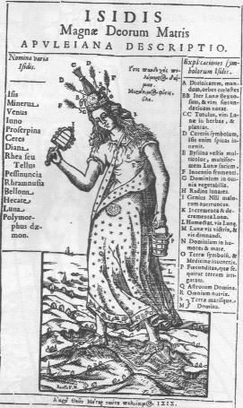
Isis, Oedipus Aegyptiacus, Athanasius Kircher, Rome, 1652« Les nombres, dit Plutarque, sont en rapport avec quelque chose que le fondateur de cette secte a observé dans les temples égyptiens : ils se référent à des cérémonies qui s'y déroulaient, ou à des symboles qu'on y montrait. »
Le secret, toutefois, Plutarque ne peut ou ne veut pas le révéler, bien qu'il affirme à diverses reprises que tout cela possède une signification profonde : tout, dans la religion égyptienne, doit être, selon lui, compris dans un sens allégorique. [nous rejoignons ici les observations de Chevreul sur le doute qu'il exprimait à propos de cette question : que faisaient réellement les prêtres égyptiens lors de ces cérémonies initiatiques ? S'agissait-il d'opérations réalisées avec le feu et des matières minérales, des métaux ? S'agissait-il de prières, de lectures, de méditation ? Ce sont des questions non résolues et nous avons vu que Chevreul n'était pas d'accord avec Hoefer sur la réponse à apporter. le lecteur aura intérêt à consulter les Origines de l'alchimie de M. Berthelot pour en savoir plus, ainsi que notre section chimie et alchimie où nous avons redonné les passages intéressants de l'ouvrage de Berthelot, commentés - ]
Isis survécut dans l'Occident chrétien, tant dans le culte de la Madone que dans la doctrine des magiciens. Reprenant les idées de Plutarque, ceux-ci découvrirent dans la déesse-mère de l'antiquité une allégorie occulte, celle de l'Âme du Monde, qui nourrit la création tout entière sur l'ordre de Dieu. [nous versons ici dans la représentation d'une alchimie entièrement ésotérique, où les images mentales, supposées décrire la représentation physique d'événements réels, ne se superpose plus à une interprétation accessible à la raison ; nous devons forcément faire ici travailler notre imaginaire et tenter de voir ceci : que l'âme du monde est censée symboliser le Soufre sublimé dans le Mercure, c'est-à-dire que l'âme est en communion avec l'Esprit.] Chassée du firmament chrétien, elle continue, dans le monde des étoiles et sur la terre, à semer l'essence de vie. [poursuivant la note ci-dessus, il faut se représenter que l'âme est chassée de son domaine - le firmament ou Ciel firmamental de Philalèthe - pour rejoindre le Corps : en termes plus clairs, le Soufre va peu à peu se réincruder et accéder à une forme cristalline en se liant avec une matrice silicato-alumineuse, cette réincrudation étant favorisée par une dissipation très lente de l'Esprit, c'est-à-dire du Mercure : c'est exactement de cette manière que l'on peut interpréter les expériences de J.J. Ebelmen - cf. section sur le Mercure -]« Elle est la partie féminine de la nature, ou cette propriété qui la rend convenable à la production de tous les autres êtres. »
Une gravure du dix-septiéme siècle montre l'âme du monde avec encore quelques-uns des symboles de l'antique Isis ; les cheveux flottants, la demi-lune sur le ventre, un pied dans l'eau, un pied sur terre. [et dès lors, on comprend parfaitement que cette image exprime un processus dynamique où le Soufre - c'est-à-dire l'oxyde métallique, est encore à l'état dissous dans le Mercure - l'eau métallique - et en partie déjà « accrété » au Corps, c'est-à-dire à l'arsenic des Anciens, où si l'on préfère au principe Sel, prétendument inventé par Paracelse -] Elle est enchaînée à Dieu, selon le mot de Plutarque:
« Isis participe toujours du Suprême. »
Et l'homme (le singe de Dieu !) lui est enchaîné, car il doit sa vraie vie au lait merveilleux du sein d'Isis. [Seligmann savait-il que les alchimistes appellent le Mercure le Lait de Vierge ?] Son image défia le temps. A la fin du dix-huitième siècle, des hommes s'en souvinrent qui semblaient fermés à tout sentiment magique : les agitateurs de la Révolution Française. A la fin de la cérémonie solanelle en l'honneur de l'Étre supréme, Robespierre, dans une vague souvenance de la mystérieuse inscription de Saïs, enflamma d'une torche un voile recouvrant la statue colossale d'une femme, Isis, dont la puissance génératrice était alors interprétée comme la Raison, nourricière du Progrès. [et c'est à Robespierre et au comité de « salut public » que nous devons d'avoir décapité l'une des gloires de la France : Lavoisier ! - Chevreul le dit de façon très explicite dans un Mémoire de l'Académie des sciences où il évoque l'histoire de la matière des plus anciens philosophes à Lavoisier -]
d)- sur Horus : Dom Pernety nous dit, dans ses Fables, que plusieurs auteurs ont confondu Horus avec Harpocrate. Nous venons de voir qu'Horus était considéré par les cabalistes comme l'hypoténuse d'un triangle rectangle où s'exprime l'équerre des Franc-maçons. Avant d'en venir à Horus plus directement, nous dirons que l'équerre peut correspondre à la lettre G [correspondant au G], sur laquelle nous sommes revenus bien souvent [cf. section Gardes du corps en particulier]. Pour les alchimistes, Horus [1, 2, 3] ne pouvait correspondre qu'à l'or hermétique ou le résultat de l'oeuvre, étant enfant d'Isis et d'Osiris. Pernety en fait l'Apollon pour lequel Osiris entreprit son si grand voyage qui le conduisit en Perse, etc. Pernety prétend même que les mythographes :
« n'auraient - s'ils avaient considéré à leur juste valeur les fables égyptiennes - pas été embarassés pour trouver la raison qui engageait les Egyptiens à représenter Horus sous la figure d'un enfant, souvent même emmailleté. Ils y auraient appris qu'Horus est l'enfant philosophique [dans ce contexte, absolument semblable à la figure christique] né d'Isis et d'Osiris, ou de la femme blanche et de l'homme rouge. »
Représenté par une tête de faucon, venant en droite ligne de celle de vautour d'Isis [cf. Fontenay], horus est souvent symbolisé par un oeil, l'oeil d'Horus ou par un disque solaire, ce qui met la légende d'accord avec les supputations de Pernety. On le décrit avant tout come un dieu combattant pour sauvegarder un équilibre entre des forces adverses et pour faire triompher des forces de lumière : c'est exprimer là cette tension dynamique qui oppose le Soufre rouge, entre son état sublimé, dans le Mercure, et cette accrétion progressive à la Toyson d'or [la résine silicato-alumineuse], c'est-à-dire cette tension circulaire entre le fixe [le Corps, Sel ou arsenic des Anciens] et le volatil [l'Esprit ou Mercure]. Le lotus était l'arbre consacré à Apollon et à Vénus. Les Égyptiens faisaient entrer dans leurs hiéroglyphes la plante appelée Lotus, et représentaient Horus, fils d’Osiris et d’Isis, assis sur cette plante ; ils la mettaient aussi quelquefois à la main d’Isis. Elle était consacrée aussi à Horus, parce que ce Dieu ne différait pas de l’Apollon Égyptien ou Hermétique [premier livre des Fables Egypt. et Grecq. dévoilées, Pernety]. On a d'autant plus donné de l'importance au lotus qu'il s'agit d'une fleur qui apparaît toute de sensualité et de souveraine perfection. Or, ces qualités semblent s'opposer au milieu d'où elle vient, d'eaux putrides, troubles et stagnantes dont le rapport de proximité au 1er état du Mercure est évident pour tout alchimiste. Le lotus a eu, de façon bien établie, une signification alchimique. Plusieurs congrégations avaient pris le lotus blanc comme emblème et une société secrète taoïste, se rapprochant du bouddhisme, pouvant se référer à « l'alchimie interne » en raison du fait que la fleur d'or est blanche.
e)- sur le scarabée : symbole cyclique, il est l'équivalent du serpent Ouroboros de la tradition hermétique. On le considère aussi comme le symbole du soleil levant. Si nous revenons sur Sirius, étoile dont nous avons parlé plus haut, l'association des deux valeurs symboliques : Sirius et scarabée nous rappelleront la remarque suivante de Canseliet :
" Quand le soleil, avec Sirius, se lève et se couche dans le grand Chien, la chaleur grandit à l'extrême, qui est indispensable à tout mûrissement...l'étudiant se reportera...à ce que dit Calid, au chapitre De la force du feu...- en son Livre des Secrets." [Deux Logis alchimiques, p. 280]
et l'on consultera la section Fontenay où nous développons plus avant ce point. La matière même des scarabées a quelque chose qui a à voir avec l'Art sacré : car ils étaient de lapis-lazuli ou d'albâtre.